I Fixed-Size Data
Every programming language comes with a language of data and a language of operations on data. The first language always provides some forms of atomic data; to represent the variety of information in the real world as data, a programmer must learn to compose basic data and to describe such compositions. Similarly, the second language provides some basic operations on atomic data; it is the programmer’s task to compose these operations into programs that perform the desired computations. We use arithmetic for the combination of these two parts of a programming language because it generalizes what you know from grade school.
This first part of the book (I) introduces the arithmetic of BSL, the programming language used in the Prologue. From arithmetic, it is a short step to your first simple programs, which you may know as functions from mathematics. Before you know it, though, the process of writing programs looks confusing, and you will long for a way to organize your thoughts. We equate “organizing thoughts” with design, and this first part of the book introduces you to a systematic way of designing programs.
1 Arithmetic
write “(”,Scan this first chapter quickly, skip ahead to the second one, and return here, when you encounter “arithmetic” that you don’t recognize.
write down the name of a primitive operation op,
write down the arguments, separated by some space, and
write down “)”.
(+ 1 2)
(+ 1 2) == 3
The rest of this chapter introduces four forms of atomic data of BSL: numbers, strings, images, and Boolean values.The next volume, How to Design Components, will explain how to design atomic data. We use the word “atomic” here in analogy to physics. You cannot peek inside atomic pieces of data, but you do have functions that combine several pieces of atomic data into another one, retrieve “properties” of them, also in terms of atomic data, and so on. The sections of this chapter introduce some of these functions, also called primitive operations or pre-defined operations. You can find others in the documentation of BSL that comes with DrRacket.
1.1 The Arithmetic of Numbers
Most people think “numbers” and “operations on numbers” when they hear “arithmetic.” “Operations on numbers” means adding two numbers to yield a third, subtracting one number from another, determining the greatest common divisor of two numbers, and many more such things. If we don’t take arithmetic too literally, we may even include the sine of an angle, rounding a real number to the closest integer, and so on.
(+ 3 4)
> (sin 0) 0
When it comes to numbers, BSL programs may use natural numbers, integers, rational numbers, real numbers, and complex numbers. We assume that you have heard of all but the last one. The last one may have been mentioned in your high school class. If not, don’t worry; while complex numbers are useful for all kinds of calculations, a novice doesn’t have to know about them.
A truly important distinction concerns the precision of numbers. For now, it is important to understand that BSL distinguishes exact numbers and inexact numbers. When it calculates with exact numbers, BSL preserves this precision whenever possible. For example, (/ 4 6) produces the precise fraction 2/3, which DrRacket can render as a proper fraction, an improper fraction, or a mixed decimal. Play with your computer’s mouse to find the menu that changes the fraction into decimal expansion.
Some of BSL’s numeric operations cannot produce an exact result. For example, using the sqrt operation on 2 produces an irrational number that cannot be described with a finite number of digits. Because computers are of finite size and BSL must somehow fit such numbers into the computer, it chooses an approximation: 1.4142135623730951. As mentioned in the Prologue, the #i prefix warns novice programmers of this lack of precision. While most programming languages choose to reduce precision in this manner, few advertise it and even fewer warn programmers.
Note on Numbers The word “Number” refers to a wide variety of numbers, including counting numbers, integers, rational numbers, real numbers, and even complex numbers. For most uses, you can safely equate Number with the number line from elementary school, though on occasion this translation is too imprecise. If we wish to be precise, we use appropriate words: Integer, Rational, and so on. We may even refine these notions using such standard terms as PositiveInteger, NonnegativeNumber, NegativeNumber, and so on. End
The expected result for these values is 5, but your expression should produce the correct result even after you change these definitions.
To confirm that the expression works properly, change x to 12 and y to 5, then click RUN. The result should be 13.
Your mathematics teacher would say that you computed the distance formula. To use the formula on alternative inputs, you need to open DrRacket, edit the definitions of x and y so they represent the desired coordinates, and click RUN. But this way of reusing the distance formula is cumbersome and naive. We will soon show you a way to define functions, which makes reusing formulas straightforward. For now, we use this kind of exercise to call attention to the idea of functions and to prepare you for programming with them.
1.2 The Arithmetic of Strings
A widespread prejudice about computers concerns their innards. Many believe
that it is all about bits and bytes—
Programming languages are about computing with information, and information comes in all shapes and forms. For example, a program may deal with colors, names, business letters, or conversations between people. Even though we could encode this kind of information as numbers, it would be a horrible idea. Just imagine remembering large tables of codes, such as 0 means “red” and 1 means “hello,” and the like.
Instead, most programming languages provide at least one kind of data that deals with such symbolic information. For now, we use BSL’s strings. Generally speaking, a String is a sequence of the characters that you can enter on the keyboard, plus a few others, about which we aren’t concerned just yet, enclosed in double quotes. In Prologue: How to Program, we have seen a number of BSL strings: "hello", "world", "blue", "red", and others. The first two are words that may show up in a conversation or in a letter; the others are names of colors that we may wish to use.
Note We use 1String to refer to the keyboard characters that make up a String. For example, "red" consists of three such 1Strings: "r", "e", "d". As it turns out, there is a bit more to the definition of 1String, but for now thinking of them as Strings of length 1 is fine. End
> (string-append "what a " "lovely " "day" " 4 BSL") "what a lovely day 4 BSL"
(+ 1 1) == 2
(string-append "a" "b") == "ab"
(+ 1 2) == 3
(string-append "ab" "c") == "abc"
(+ 2 2) == 4
(string-append "a" " ") == "a "
...
...
See exercise 1 for how to create expressions using DrRacket.
1.3 Mixing It Up
string-length consumes a string and produces a number;
string-ith consumes a string s together with a number i and extracts the 1String located at the ith position (counting from 0); and
number->string consumes a number and produces a string.
> (string-length 42) string-length:expects a string, given 42
(+ (string-length "hello world") 20)
(+ (string-length "hello world") 20) == (+ 11 20) == 31
(+ (string-length (number->string 42)) 2) == (+ (string-length "42") 2) == (+ 2 2) == 4
(+ (string-length 42) 1)
See exercise 1 for how to create expressions in DrRacket.
Exercise 4. Use the same setup as in exercise 3 to create an expression that deletes the ith position from str. Clearly this expression creates a shorter string than the given one. Which values for i are legitimate?
1.4 The Arithmetic of Images
An Image is a visual, rectangular piece of data, for example, a photo or a geometric figure and its frame.Remember to require the 2htdp/image library in a new tab. You can insert images in DrRacket wherever you can write down an expression because images are values, just like numbers and strings.
circle produces a circle image from a radius, a mode string, and a color string;
ellipse produces an ellipse from two diameters, a mode string, and a color string;
line produces a line from two points and a color string;
rectangle produces a rectangle from a width, a height, a mode string, and a color string;
text produces a text image from a string, a font size, and a color string; and
triangle produces an upward-pointing equilateral triangle from a size, a mode string, and a color string.
image-width determines the width of an image in terms of pixels;
image-height determines the height of an image;
> (image-width (circle 10 "solid" "red")) 20
> (image-height (rectangle 10 20 "solid" "blue")) 20
(+ (image-width (circle 10 "solid" "red")) (image-height (rectangle 10 20 "solid" "blue")))
A proper understanding of the third kind of image-composing primitives requires the introduction of one new idea: the anchor point. An image isn’t just a single pixel, it consists of many pixels. Specifically, each image is like a photograph, that is, a rectangle of pixels. One of these pixels is an implicit anchor point. When you use an image primitive to compose two images, the composition happens with respect to the anchor points, unless you specify some other point explicitly:
overlay places all the images to which it is applied on top of each other, using the center as anchor point;
overlay/xy is like overlay but accepts two numbers—
x and y— between two image arguments. It shifts the second image by x pixels to the right and y pixels down— all with respect to the first image’s top-left corner; unsurprisingly, a negative x shifts the image to the left and a negative y up; and overlay/align is like overlay but accepts two strings that shift the anchor point(s) to other parts of the rectangles. There are nine different positions overall; experiment with all possibilities!
empty-scene creates a rectangle of some given width and height;
place-image places an image into a scene at a specified position. If the image doesn’t fit into the given scene, it is appropriately cropped;
scene+line consumes a scene, four numbers, and a color to draw a line into the given image. Experiment with it to see how it works.
arithmetic of numbers
arithmetic of images
(+ 1 1) == 2
(overlay (square 4 "solid" "orange") (circle 6 "solid" "yellow")) ==
(+ 1 2) == 3
(underlay (circle 6 "solid" "yellow") (square 4 "solid" "orange")) ==
(+ 2 2) == 4
(place-image (circle 6 "solid" "yellow") 10 10 (empty-scene 20 20)) == ...
...
The laws of arithmetic for images are analogous to those for numbers; see figure 10 for some examples and a comparison with numeric arithmetic. Again, no image gets destroyed or changed. Like +, these primitives just make up new images that combine the given ones in some manner.
Exercise 5. Use the 2htdp/image library to create the image of a simple boat or tree. Make sure you can easily change the scale of the entire image.
(define cat )
1.5 The Arithmetic of Booleans
We need one last kind of primitive data before we can design programs: Boolean values. There are only two kinds of Boolean values: #true and #false. Programs use Boolean values for representing decisions or the status of switches.
Exercise 7. Boolean expressions can express some everyday problems. Suppose you want to decide whether today is an appropriate day to go to the mall. You go to the mall either if it is not sunny or ifNadeem Hamid suggested this formulation of the exercise. today is Friday (because that is when stores post new sales items).
See exercise 1 for how to create expressions in DrRacket. How many combinations of Booleans can you associate with sunny and friday?
1.6 Mixing It Up with Booleans
(define x 2)
The first expression is always evaluated. Its result must be a Boolean.
If the result of the first expression is #true, then the second expression is evaluated; otherwise the third one is. Whatever their results are, they are also the result of the entire if expression.
Right-click on the result and choose a different representation.
(if (= x 0) 0 (/ 1 x)) == ; because x stands for 2 (if (= 2 0) 0 (/ 1 2)) == ; 2 is not equal to 0, (= 2 0) is #false (if #false 0 (/ 1 x)) (/ 1 2) == ; normalize this to its decimal representation 0.5
(define x 0)
In addition to =, BSL provides a host of other comparison primitives. Explain what the following four comparison primitives determine about numbers: <, <=, >, >=.
Strings aren’t compared with = and its relatives. Instead, you must use string=? or string<=? or string>=? if you ever need to compare strings. While it is obvious that string=? checks whether the two given strings are equal, the other two primitives are open to interpretation. Look up their documentation. Or, experiment, guess a general law, and then check in the documentation whether you guessed right.
The next few chapters introduce better expressions than if to express conditional computations and, most importantly, systematic ways for designing them.
(define cat )
Now try the following modification. Create an expression that computes whether a picture is "tall", "wide", or "square".
1.7 Predicates: Know Thy Data
(* (+ (string-length 42) 1) pi)
(define in ...) (string-length in)
Every class of data that we introduced in this chapter comes with a predicate. Experiment with number?, string?, image?, and boolean? to ensure that you understand how they work.
See exercise 1 for how to create expressions in DrRacket.
Exercise 10. Now relax, eat, sleep, and then tackle the next chapter.
2 Functions and Programs
As far as programming is concerned, “arithmetic” is half the game; the other half is “algebra.” Of course, “algebra” relates to the school notion of algebra as little/much as the notion of “arithmetic” from the preceding chapter relates to arithmetic taught in grade-school arithmetic. Specifically, the algebra notions needed are variable, function definition, function application, and function composition. This chapter reacquaints you with these notions in a fun and accessible manner.
2.1 Functions
Programs are functions. Like functions, programs consume inputs and produce outputs. Unlike the functions you may know, programs work with a variety of data: numbers, strings, images, mixtures of all these, and so on. Furthermore, programs are triggered by events in the real world, and the outputs of programs affect the real world. For example, a spreadsheet program may react to an accountant’s key presses by filling some cells with numbers, or the calendar program on a computer may launch a monthly payroll program on the last day of every month. Lastly, a program may not consume all of its input data at once, instead it may decide to process data in an incremental manner.
Definitions While many programming languages obscure the relationship between programs and functions, BSL brings it to the fore. Every BSL program consists of several definitions, usually followed by an expression that involves those definitions. There are two kinds of definitions:
constant definitions, of the shape (define Variable Expression), which we encountered in the preceding chapter; and
function definitions, which come in many flavors, one of which we used in the Prologue.
“(define (”,
the name of the function,
followed by several variables, separated by space and ending in “)”,
and an expression followed by “)”.
Before we explain why these examples are silly, we need to explain what
function definitions mean. Roughly speaking, a function definition
introduces a new operation on data; put differently, it adds an operation
to our vocabulary if we think of the primitive operations as the ones that
are always available. Like a primitive function, a defined function
consumes inputs. The number of variables determines how many inputs—
The examples are silly because the expressions inside the functions do not involve the variables. Since variables are about inputs, not mentioning them in the expressions means that the function’s output is independent of its input and therefore always the same. We don’t need to write functions or programs if the output is always the same.
(define x 3)
For now, the only remaining question is how a function obtains its inputs. And to this end, we turn to the notion of applying a function.
write “(”,
write down the name of a defined function f,
write down as many arguments as f consumes, separated by space,
and add “)” at the end.
> (f 1) 1
> (f "hello world") 1
> (f #true) 1
> (f) f:expects 1 argument, found none
> (f 1 2 3 4 5) f:expects only 1 argument, found 5
> (+) +:expects at least 2 arguments, found none
Exercise 11. Define a function that consumes two numbers, x and y, and that computes the distance of point (x,y) to the origin.
In exercise 1 you developed the right-hand side of this function for concrete values of x and y. Now add a header.
Exercise 12. Define the function cvolume, which accepts the length of a side of an equilateral cube and computes its volume. If you have time, consider defining csurface, too.
Hint An equilateral cube is a three-dimensional container bounded by six squares. You can determine the surface of a cube if you know that the square’s area is its length multiplied by itself. Its volume is the length multiplied with the area of one of its squares. (Why?)
Exercise 13. Define the function string-first, which extracts the first 1String from a non-empty string.
Exercise 14. Define the function string-last, which extracts the last 1String from a non-empty string.
Exercise 15. Define ==>. The function consumes two Boolean values, call them sunny and friday. Its answer is #true if sunny is false or friday is true. Note Logicians call this Boolean operation implication, and they use the notation sunny => friday for this purpose.
Exercise 16. Define the function image-area, which counts the number of pixels in a given image. See exercise 6 for ideas.
Exercise 17. Define the function image-classify, which consumes an image and conditionally produces "tall" if the image is taller than wide, "wide" if it is wider than tall, or "square" if its width and height are the same. See exercise 8 for ideas.
Exercise 18. Define the function string-join, which consumes two strings and appends them with "_" in between. See exercise 2 for ideas.
Exercise 19. Define the function string-insert, which consumes a string str plus a number i and inserts "_" at the ith position of str. Assume i is a number between 0 and the length of the given string (inclusive). See exercise 3 for ideas. Ponder how string-insert copes with "".
Exercise 20. Define the function string-delete, which consumes a string plus a number i and deletes the ith position from str. Assume i is a number between 0 (inclusive) and the length of the given string (exclusive). See exercise 4 for ideas. Can string-delete deal with empty strings?
2.2 Computing
Function definitions and applications work in tandem. If you want to design
programs, you must understand this collaboration because you need to
imagine how DrRacket runs your programs and because you need to figure out
what goes wrong when things go wrong—
While you may have seen this idea in an algebra course, we prefer to explain it our way. So here we go. Evaluating a function application proceeds in three steps: DrRacket determines the values of the argument expressions; it checks that the number of arguments and the number of function parameters are the same; if so, DrRacket computes the value of the body of the function, with all parameters replaced by the corresponding argument values. This last value is the value of the function application. This is a mouthful, so we need examples.
(f (+ 1 1)) == ; DrRacket knows that (+ 1 1) == 2 (f 2) == ; DrRacket replaced all occurrences of x with 2 1
(ff (+ 1 1)) == ; DrRacket again knows that (+ 1 1) == 2 (ff 2) == ; DrRacket replaces a with 2 in ff's body (* 10 2) == ; and from here, DrRacket uses plain arithmetic 20
(+ (ff (+ 1 2)) 2) == ; DrRacket knows that (+ 1 2) == 3 (+ (ff 3) 2) == ; DrRacket replaces a with 3 in ff's body (+ (* 10 3) 2) == ; now DrRacket uses the laws of arithmetic (+ 30 2) == 32
(* (ff 4) (+ (ff 3) 2)) == ; DrRacket substitutes 4 for a in ff's body (* (* 10 4) (+ (ff 3) 2)) == ; DrRacket knows that (* 10 4) == 40 (* 40 (+ (ff 3) 2)) == ; now it uses the result of the above calculation (* 40 32) == 1280 ; because it is really just math
In sum, DrRacket is an incredibly fast algebra student; it knows all the laws of arithmetic and it is great at substitution. Even better, DrRacket cannot only determine the value of an expression; it can also show you how it does it. That is, it can show you step-by-step how to solve these algebra problems that ask you to determine the value of an expression.
Take a second look at the buttons that come with DrRacket. One of them looks like an “advance to next track” button on an audio player. If you click this button, the stepper window pops up and you can step through the evaluation of the program in the definitions area.
Enter the definition of ff into the definitions area. Add (ff (+ 1 1)) at the bottom. Now click the STEP. The stepper window will show up; figure 11 shows what it looks like in version 6.2 of the software. At this point, you can use the forward and backward arrows to see all the computation steps that DrRacket uses to determine the value of an expression. Watch how the stepper performs the same calculations as we do.
Stop! Yes, you could have used DrRacket to solve some of your algebra homework. Experiment with the various options that the stepper offers.

Exercise 21. Use DrRacket’s stepper to evaluate (ff (ff 1)) step-by-step. Also try (+ (ff 1) (ff 1)). Does DrRacket’s stepper reuse the results of computations?
At this point, you might think that you are back in an algebra course with all these computations involving uninteresting functions and numbers. Fortunately, this approach generalizes to all programs, including the interesting ones, in this book.
(string-append "hello" " " "world") == "hello world" (string-append "bye" ", " "world") == "bye, world" ...
(define (opening first-name last-name) (string-append "Dear " first-name ","))
> (opening "Matthew" "Fisler") "Dear Matthew,"
(opening "Matthew" "Fisler") == ; DrRacket substitutes "Matthew" for first-name (string-append "Dear " "Matthew" ",") == "Dear Matthew,"
The rest of the book introduces more forms of data.Eventually you will encounter imperative operations, which do not combine or extract values but modify them. To calculate with such operations, you will need to add some laws to those of arithmetic and substitution. To explain operations on data, we always use laws like those of arithmetic in this book.
(define (image-classify img) (cond [(>= (image-height img) (image-width img)) "tall"] [(= (image-height img) (image-width img)) "square"] [(<= (image-height img) (image-width img)) "wide"]))
(define (string-insert s i) (string-append (substring s 0 i) "_" (substring s i))) (string-insert "helloworld" 6)
2.3 Composing Functions
A program rarely consists of a single function definition. Typically, programs consist of a main definition and several other functions and turn the result of one function application into the input for another. In analogy to algebra, we call this way of defining functions composition, and we call these additional functions auxiliary functions or helper functions.
(define (letter fst lst signature-name) (string-append (opening fst) "\n\n" (body fst lst) "\n\n" (closing signature-name))) (define (opening fst) (string-append "Dear " fst ",")) (define (body fst lst) (string-append "We have discovered that all people with the" "\n" "last name " lst " have won our lottery. So, " "\n" fst ", " "hurry and pick up your prize.")) (define (closing signature-name) (string-append "Sincerely," "\n\n" signature-name "\n"))
Consider the program of figure 12 for filling in
letter templates. It consists of four functions. The first one is the main
function, which produces a complete letter from the first and last name of
the addressee plus a signature. The main function refers to three
auxiliary functions to produce the three pieces of the letter—
> (letter "Matthew" "Fisler" "Felleisen") "Dear Matthew,\n\nWe have discovered that ...\n"
> (letter "Kathi" "Felleisen" "Findler") "Dear Kathi,\n\nWe have discovered that ...\n"
> (write-file 'stdout (letter "Matt" "Fiss" "Fell"))
Dear Matt,
We have discovered that all people with the
last name Fiss have won our lottery. So,
Matt, hurry and pick up your prize.
Sincerely,
Fell
'stdout
In general, when a problem refers to distinct tasks of computation, a program should consist of one function per task and a main function that puts it all together. We formulate this idea as a simple slogan:
Define one function per task.
The advantage of following this slogan is that you get reasonably small functions, each of which is easy to comprehend and whose composition is easy to understand. Once you learn to design functions, you will recognize that getting small functions to work correctly is much easier than doing so with large ones. Better yet, if you ever need to change a part of the program due to some change to the problem statement, it tends to be much easier to find the relevant parts when it is organized as a collection of small functions as opposed to a large, monolithic block.
Here is a small illustration of this point with a sample problem:
Sample Problem The owner of a monopolistic movie theater in a small town has complete freedom in setting ticket prices. The more he charges, the fewer people can afford tickets. The less he charges, the more it costs to run a show because attendance goes up. In a recent experiment the owner determined a relationship between the price of a ticket and average attendance.
At a price of $5.00 per ticket, 120 people attend a performance. For each 10-cent change in the ticket price, the average attendance changes by 15 people. That is, if the owner charges $5.10, some 105 people attend on the average; if the price goes down to $4.90, average attendance increases to 135. Let’s translate this idea into a mathematical formula: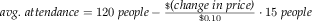
Stop! Explain the minus sign before you proceed.Unfortunately, the increased attendance also comes at an increased cost. Every performance comes at a fixed cost of $180 to the owner plus a variable cost of $0.04 per attendee.
The owner would like to know the exact relationship between profit and ticket price in order to maximize the profit.
The problem statement specifies how the number of attendees depends on the ticket price. Computing this number is clearly a separate task and thus deserves its own function definition:
(define (attendees ticket-price) (- 120 (* (- ticket-price 5.0) (/ 15 0.1)))) The revenue is exclusively generated by the sale of tickets, meaning it is exactly the product of ticket price and number of attendees:
(define (revenue ticket-price) (* ticket-price (attendees ticket-price))) The cost consists of two parts: a fixed part ($180) and a variable part that depends on the number of attendees. Given that the number of attendees is a function of the ticket price, a function for computing the cost of a show must also consume the ticket price so that it can reuse the attendees function:
(define (cost ticket-price) (+ 180 (* 0.04 (attendees ticket-price)))) Finally, profit is the difference between revenue and costs for some given ticket price:
(define (profit ticket-price) (- (revenue ticket-price) (cost ticket-price))) The BSL definition of profit directly follows the suggestion of the informal problem description.
Exercise 27. Our solution to the sample problem contains several constants in the middle of functions. As One Program, Many Definitions already points out, it is best to give names to such constants so that future readers understand where these numbers come from. Collect all definitions in DrRacket’s definitions area and change them so that all magic numbers are refactored into constant definitions.
Exercise 28. Determine the potential profit for these ticket prices: $1, $2, $3, $4, and $5. Which price maximizes the profit of the movie theater? Determine the best ticket price to a dime.
(define (profit price) (- (* (+ 120 (* (/ 15 0.1) (- 5.0 price))) price) (+ 180 (* 0.04 (+ 120 (* (/ 15 0.1) (- 5.0 price)))))))
Exercise 29. After studying the costs of a show, the owner discovered several ways of lowering the cost. As a result of these improvements, there is no longer a fixed cost; a variable cost of $1.50 per attendee remains.
Modify both programs to reflect this change. When the programs are modified, test them again with ticket prices of $3, $4, and $5 and compare the results.
2.4 Global Constants
write “(define ”,
write down the name,
followed by a space and an expression, and
write down “)”.
; the current price of a movie ticket: (define CURRENT-PRICE 5) ; useful to compute the area of a disk: (define ALMOST-PI 3.14) ; a blank line: (define NL "\n") ; an empty scene: (define MT (empty-scene 100 100))
(define ALMOST-PI 3.14159) ; an empty scene: (define MT (empty-scene 200 800))
(define WIDTH 100) (define HEIGHT 200) (define MID-WIDTH (/ WIDTH 2)) (define MID-HEIGHT (/ HEIGHT 2))
Again, we state an imperative slogan:
For every constant mentioned in a problem statement, introduce one constant definition.
Exercise 30. Define constants for the price optimization program at the movie theater so that the price sensitivity of attendance (15 people for every 10 cents) becomes a computed constant.
2.5 Programs
a batch program consumes all of its inputs at once and computes its result. Its main function is the composition of auxiliary functions, which may refer to additional auxiliary functions, and so on. When we launch a batch program, the operating system calls the main function on its inputs and waits for the program’s output.
an interactive program consumes some of its inputs, computes, produces some output, consumes more input, and so on. When an input shows up, we speak of an event, and we create interactive programs as event-driven programs. The main function of such an event-driven program uses an expression to describe which functions to call for which kinds of events. These functions are called event handlers.
When we launch an interactive program, the main function informs the operating system of this description. As soon as input events happen, the operating system calls the matching event handler. Similarly, the operating system knows from the description when and how to present the results of these function calls as output.
Batch Programs As mentioned, a batch program consumes all of its inputs at once and computes the result from these inputs. Its main function expects some arguments, hands them to auxiliary functions, receives results from those, and composes these results into its own final answer.
Once programs are created, we want to use them. In DrRacket, we launch batch programs in the interactions area so that we can watch the program at work.
Programs are even more useful if they can retrieve the input from some file and deliver the output to some other file. Indeed, the name “batch program” dates to the early days of computing when a program read a file (or several files) from a batch of punch cards and placed the result in some other file(s), also a batch of cards. Conceptually, a batch program reads the input file(s) at once and also produces the result file(s) all at once.
read-file, which reads the content of an entire file as a string, and
write-file, which creates a file from a given string.
> (write-file "sample.dat" "212") "sample.dat"
> (read-file "sample.dat") "212"
212 |
> (write-file 'stdout "212\n") 212
'stdout
Let’s illustrate the creation of a batch program with a simple example. Suppose we wish to create a program that converts a temperature measured on a Fahrenheit thermometer into a Celsius temperature. Don’t worry, this question isn’t a test about your physics knowledge; here is the conversion formula:This book is not about memorizing facts, but we do expect you to know where to find them. Do you know where to find out how temperatures are converted?
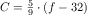
Naturally, in this formula f is the Fahrenheit temperature and C is the Celsius temperature. While this formula might be good enough for a pre-algebra textbook, a mathematician or a programmer would write C(f) on the left side of the equation to remind readers that f is a given value and C is computed from f.
> (C 32) 0
> (C 212) 100
> (C -40) -40
(define (convert in out) (write-file out (string-append (number->string (C (string->number (read-file in)))) "\n")))
(read-file in) retrieves the content of the named file as a string;
string->number turns this string into a number;
C interprets the number as a Fahrenheit temperature and converts it into a Celsius temperature;
number->string consumes this Celsius temperature and turns it into a string; and
(write-file out ...) places this string into the file named out.
(string-append ... "\n")
In contrast, the average function composition in a pre-algebra course involves two functions, possibly three. Keep in mind, though, that programs accomplish a real-world purpose while exercises in algebra merely illustrate the idea of function composition.
> (write-file "sample.dat" "212") "sample.dat"
> (convert "sample.dat" 'stdout) 100
'stdout
> (convert "sample.dat" "out.dat") "out.dat"
> (read-file "out.dat") "100"
In addition to running the batch program, it is also instructive to step through the computation. Make sure that the file "sample.dat" exists and contains just a number, then click the STEP button in DrRacket. Doing so opens another window in which you can peruse the computational process that the call to the main function of a batch program triggers. You will see that the process follows the above outline.
> (write-file 'stdout (letter "Matthew" "Fisler" "Felleisen"))
Dear Matthew,
We have discovered that all people with the
last name Fisler have won our lottery. So,
Matthew, hurry and pick up your prize.
Sincerely,
Felleisen
'stdout
(define (main in-fst in-lst in-signature out) (write-file out (letter (read-file in-fst) (read-file in-lst) (read-file in-signature))))
Create appropriate files, launch main, and check whether it delivers the expected letter in a given file.
Interactive Programs Batch programs are a staple of business uses of computers, but the programs people encounter now are interactive. In this day and age, people mostly interact with desktop applications via a keyboard and a mouse. Furthermore, interactive programs can also react to computer-generated events, for example, clock ticks or the arrival of a message from some other computer.
Exercise 32. Most people no longer use desktop computers just to run applications but also employ cell phones, tablets, and their cars’ information control screen. Soon people will use wearable computers in the form of intelligent glasses, clothes, and sports gear. In the somewhat more distant future, people may come with built-in bio computers that directly interact with body functions. Think of ten different forms of events that software applications on such computers will have to deal with.
The purpose of this section is to introduce the mechanics of writing interactive BSL programs. Because many of the project-style examples in this book are interactive programs, we introduce the ideas slowly and carefully. You may wish to return to this section when you tackle some of the interactive programming projects; a second or third reading may clarify some of the advanced aspects of the mechanics.
By itself, a raw computer is a useless piece of physical equipment. It is called hardware because you can touch it. This equipment becomes useful once you install software, that is, a suite of programs. Usually the first piece of software to be installed on a computer is an operating system. It has the task of managing the computer for you, including connected devices such as the monitor, the keyboard, the mouse, the speakers, and so on. The way it works is that when a user presses a key on the keyboard, the operating system runs a function that processes keystrokes. We say that the keystroke is a key event, and the function is an event handler. In the same vein, the operating system runs an event handler for clock ticks, for mouse actions, and so on. Conversely, after an event handler is done with its work, the operating system may have to change the image on the screen, ring a bell, print a document, or perform a similar action. To accomplish these tasks, it also runs functions that translate the operating system’s data into sounds, images, actions on the printer, and so on.
Naturally, different programs have different needs. One program may interpret keystrokes as signals to control a nuclear reactor; another passes them to a word processor. To make a general-purpose computer work on these radically different tasks, different programs install different event handlers. That is, a rocket-launching program uses one kind of function to deal with clock ticks while an oven’s software uses a different kind.
Designing an interactive program requires a way to designate some function as the one that takes care of keyboard events, another function for dealing with clock ticks, a third one for presenting some data as an image, and so forth. It is the task of an interactive program’s main function to communicate these designations to the operating system, that is, the software platform on which the program is launched.
DrRacket is a small operating system, and BSL is one of its programming languages. The latter comes with the 2htdp/universe library, which provides big-bang, a mechanism for telling the operating system which function deals with which event. In addition, big-bang keeps track of the state of the program. To this end, it comes with one required sub-expression, whose value becomes the initial state of the program. Otherwise big-bang consists of one required clause and many optional clauses. The required to-draw clause tells DrRacket how to render the state of the program, including the initial one. Each of the other, optional clauses tells the operating system that a certain function takes care of a certain event. Taking care of an event in BSL means that the function consumes the state of the program and a description of the event, and that it produces the next state of the program. We therefore speak of the current state of the program.
Terminology In a sense, a big-bang expression describes how a program connects with a small segment of the world. This world might be a game that the program’s users play, an animation that the user watches, or a text editor that the user employs to manipulate some notes. Programming language researchers therefore often say that big-bang is a description of a small world: its initial state, how states are transformed, how states are rendered, and how big-bang may determine other attributes of the current state. In this spirit, we also speak of the state of the world and even call big-bang programs world programs. End
> (number->square 5)
> (number->square 10)
> (number->square 20)
every time the clock ticks, subtract 1 from the current state;
then check whether zero? is true of the new state and if so, stop; and
every time an event handler returns a value, use number->square to render it as an image.
100, 99, 98, ..., 2, 1, 0
(define (reset s ke) 100)
What you will see is that the red square shrinks at the rate of one pixel per clock tick. As soon as you press the "a" key, though, the red square reinflates to full size because reset is called on the current length of the square and "a" and returns 100. This number becomes big-bang’s new state and number->square renders it as a full-sized red square.
In order to understand the evaluation of big-bang expressions in general, let’s look at a schematic version:
The evaluation of this big-bang expression starts with cw0, which is usually an expression. DrRacket, our operating system, installs the value of cw0 as the current state. It uses render to translate the current state into an image, which is then displayed in a separate window. Indeed, render is the only means for a big-bang expression to present data to the world.
Every time the clock ticks, DrRacket applies tock to big-bang’s current state and receives a value in response; big-bang treats this return value as the next current state.
Every time a key is pressed, DrRacket applies ke-h to big-bang’s current state and a string that represents the key; for example, pressing the “a” key is represented with "a" and the left arrow key with "left". When ke-h returns a value, big-bang treats it as the next current state.
Every time a mouse enters the window, leaves it, moves, or is clicked, DrRacket applies me-h to big-bang’s current state, the event’s x- and y-coordinates, and a string that represents the kind of mouse event that happened; for example, clicking a mouse’s button is represented with "button-down". When me-h returns a value, big-bang treats it as the next current state.
current state
cw0
cw1
...
event
e0
e1
...
on clock tick
(tock cw0)
(tock cw1)
...
on keystroke
(ke-h cw0 e0)
(ke-h cw1 e1)
...
on mouse event
(me-h cw0 e0 ...)
(me-h cw1 e1 ...)
...
its image
(render cw0)
(render cw1)
...
Figure 13: How big-bang works
If e0 is a clock tick, big-bang evaluates (tock cw0) to produce cw1.
If e0 is a key event, (ke-h cw0 e0) is evaluated and yields cw1. The handler must be applied to the event itself because, in general, programs are going to react to each key differently.
If e0 is a mouse event, big-bang runs (me-h cw0 e0 ...) to get cw1. The call is a sketch because a mouse event e0 is really associated with several pieces of data—
its nature and its coordinates— and we just wish to indicate that much. Finally, render turns the current state into an image, which is indicated by the last row. DrRacket displays these images in the separate window.
cw1 is the result of (ke-h cw0 "a");
cw2 is the result of (tock cw1); and
cw3 is the result of (me-h cw2 90 100 "button-down").
cw1 is the result of (tock cw0);
cw2 is the result of (tock cw1); and
cw3 is the result of (tock cw2).
(tock (tock (tock cw0)))
(define BACKGROUND (empty-scene 100 100)) (define DOT (circle 3 "solid" "red")) (define (main y) (big-bang y [on-tick sub1] [stop-when zero?] [to-draw place-dot-at] [on-key stop])) (define (place-dot-at y) (place-image DOT 50 y BACKGROUND)) (define (stop y ke) 0)
In short, the sequence of events determines in which order big-bang conceptually traverses the above table of possible states to arrive at the current state for each time slot. Of course, big-bang does not touch the current state; it merely safeguards it and passes it to event handlers and other functions when needed.
From here, it is straightforward to define a first interactive program. See figure 14. The program consists of two constant definitions followed by three function definitions: main, which launches a big-bang interactive program; place-dot-at, which translates the current state into an image; and stop, which throws away its inputs and produces 0.
> (place-dot-at 89) 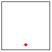
> (stop 89 "q") 0
> (main 90)
|
Relax. |
|
By now, you may feel that these first two chapters are overwhelming. They introduce many new concepts, including a new language, its vocabulary, its meaning, its idioms, a tool for writing down texts in this vocabulary, and a way of running these programs. Confronted with this plethora of ideas, you may wonder how one creates a program when presented with a problem statement. To answer this central question, the next chapter takes a step back and explicitly addresses the systematic design of programs. So take a breather and continue when ready.
3 How to Design Programs
The first few chapters of this book show that learning to program requires some mastery of many concepts. On the one hand, programming needs a language, a notation for communicating what we wish to compute. The languages for formulating programs are artificial constructions, though acquiring a programming language shares some elements with acquiring a natural language. Both come with vocabulary, grammar, and an understanding of what “phrases” mean.
On the other hand, it is critical to learn how to get from a problem statement to a program. We need to determine what is relevant in the problem statement and what can be ignored. We need to tease out what the program consumes, what it produces, and how it relates inputs to outputs. We have to know, or find out, whether the chosen language and its libraries provide certain basic operations for the data that our program is to process. If not, we might have to develop auxiliary functions that implement these operations. Finally, once we have a program, we must check whether it actually performs the intended computation. And this might reveal all kinds of errors, which we need to be able to understand and fix.
All this sounds rather complex, and you might wonder why we don’t just muddle our way through, experimenting here and there, leaving well enough alone when the results look decent. This approach to programming, often dubbed “garage programming,” is common and succeeds on many occasions; sometimes it is the launching pad for a start-up company. Nevertheless, the start-up cannot sell the results of the “garage effort” because only the original programmers and their friends can use them.
A good program comes with a short write-up that explains what it does, what inputs it expects, and what it produces. Ideally, it also comes with some assurance that it actually works. In the best circumstances, the program’s connection to the problem statement is evident so that a small change to the problem statement is easy to translate into a small change to the program. Software engineers call this a “programming product.”
All this extra work is necessary because programmers don’t create programs for themselves. Programmers write programs for other programmers to read, and on occasion, people run these programs to get work done.The word “other” also includes older versions of the programmer who usually cannot recall all the thinking that the younger version put into the production of the program. Most programs are large, complex collections of collaborating functions, and nobody can write all these functions in a day. Programmers join projects, write code, leave projects; others take over their programs and work on them. Another difficulty is that the programmer’s clients tend to change their mind about what problem they really want solved. They usually have it almost right, but more often than not, they get some details wrong. Worse, complex logical constructions such as programs almost always suffer from human errors; in short, programmers make mistakes. Eventually someone discovers these errors and programmers must fix them. They need to reread the programs from a month ago, a year ago, or twenty years ago and change them.
Exercise 33. Research the “year 2000” problem.
Here we present a design recipe that integrates a step-by-step
process with a way of organizing programs around problem data. For the
readers who don’t like to stare at blank screens for a long time, this
design recipe offers a way to make progress in a systematic manner. For
those of you who teach others to design programs, the recipe is a device
for diagnosing a novice’s difficulties. For others, our recipe might be
something that they can apply to other areas—
3.1 Designing Functions
Information and Data The purpose of a program is to describe a
computational process that consumes some information and produces new
information. In this sense, a program is like the instructions a
mathematics teacher gives to grade school students. Unlike a student,
however, a program works with more than numbers: it calculates with
navigation information, looks up a person’s address, turns on switches, or
inspects the state of a video game. All this information comes from a part
of the real world—
Information plays a central role in our description. Think of information as facts about the program’s domain. For a program that deals with a furniture catalog, a “table with five legs” or a “square table of two by two meters” are pieces of information. A game program deals with a different kind of domain, where “five” might refer to the number of pixels per clock tick that some object travels on its way from one part of the canvas to another. Or, a payroll program is likely to deal with “five deductions.”
For a program to process information, it must turn it into some form of data in the programming language; then it processes the data; and once it is finished, it turns the resulting data into information again. An interactive program may even intermingle these steps, acquiring more information from the world as needed and delivering information in between.
We use BSL and DrRacket so that you do not have to worry about the translation of information into data. In DrRacket’s BSL you can apply a function directly to data and observe what it produces. As a result, we avoid the serious chicken-and-egg problem of writing functions that convert information into data and vice versa. For simple kinds of information, designing such program pieces is trivial; for anything other than simple information, you need to know about parsing, for example, and that immediately requires a lot of expertise in program design.
Software engineers use the slogan model-view-controller (MVC) for the way BSL and DrRacket separate data processing from parsing information into data and turning data into information. Indeed, it is now accepted wisdom that well-engineered software systems enforce this separation, even though most introductory books still commingle them. Thus, working with BSL and DrRacket allows you to focus on the design of the core of programs, and, when you have enough experience with that, you can learn to design the information-data translation parts.
Here we use two preinstalled teachpacks to demonstrate the separation of data and information: 2htdp/batch-io and 2htdp/universe. Starting with this chapter, we develop design recipes for batch and interactive programs to give you an idea of how complete programs are designed. Do keep in mind that the libraries of full-fledged programming languages offer many more contexts for complete programs, and that you will need to adapt the design recipes appropriately.
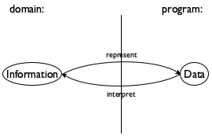
Given the central role of information and data, program design must start with the connection between them. Specifically, we, the programmers, must decide how to use our chosen programming language to represent the relevant pieces of information as data and how we should interpret data as information. Figure 15 explains this idea with an abstract diagram.
42 may refer to the number of pixels from the top margin in the domain of images;
42 may denote the number of pixels per clock tick that a simulation or game object moves;
42 may mean a temperature, on the Fahrenheit, Celsius, or Kelvin scale for the domain of physics;
42 may specify the size of some table if the domain of the program is a furniture catalog; or
42 could just count the number of characters in a string.
Since this knowledge is so important for everyone who reads the program, we
often write it down in the form of comments, which we call data
definitions. A data definition serves two purposes. First, it names a
collection of data—
; A Temperature is a Number. ; interpretation represents Celsius degrees
If you happen to know that the lowest possible temperature is approximately
 C, you may wonder whether it is possible to express this knowledge in
a data definition. Since our data definitions are really just English
descriptions of classes, you may indeed define the class of temperatures
in a much more accurate manner than shown here. In this book, we use a
stylized form of English for such data definitions, and the next chapter
introduces the style for imposing constraints such as “larger than
-274.”
C, you may wonder whether it is possible to express this knowledge in
a data definition. Since our data definitions are really just English
descriptions of classes, you may indeed define the class of temperatures
in a much more accurate manner than shown here. In this book, we use a
stylized form of English for such data definitions, and the next chapter
introduces the style for imposing constraints such as “larger than
-274.”
So far, you have encountered the names of four classes of data: Number, String, Image, and Boolean. With that, formulating a new data definition means nothing more than introducing a new name for an existing form of data, say, “temperature” for numbers. Even this limited knowledge, though, suffices to explain the outline of our design process.
- Express how you wish to represent information as data. A one-line comment suffices:
; We use numbers to represent centimeters.
Formulate data definitions, like the one for Temperature, for the classes of data you consider critical for the success of your program. Write down a signature, a statement of purpose, and a function header.
A function signature is a comment that tells the readers of your design how many inputs your function consumes, from which classes they are drawn, and what kind of data it produces. Here are three examples for functions that respectively- consume a Temperature and produce a String:
; Temperature -> String
As this signature points out, introducing a data definition as an alias for an existing form of data makes it easy to read the intention behind signatures.Nevertheless, we recommend that you stay away from aliasing data definitions for now. A proliferation of such names can cause quite a lot of confusion. It takes practice to balance the need for new names and the readability of programs, and there are more important ideas to understand right now.
- Stop! What does this function produce?
A purpose statement is a BSL comment that summarizes the purpose of the function in a single line. If you are ever in doubt about a purpose statement, write down the shortest possible answer to the questionwhat does the function compute?
Every reader of your program should understand what your functions compute without having to read the function itself.A multi-function program should also come with a purpose statement. Indeed, good programmers write two purpose statements: one for the reader who may have to modify the code and another one for the person who wishes to use the program but not read it.
Finally, a header is a simplistic function definition, also called a stub. Pick one variable name for each class of input in the signature; the body of the function can be any piece of data from the output class. These three function headers match the above three signatures:(define (f a-string) 0)
(define (g n) "a")
(define (h num str img) (empty-scene 100 100))
Our parameter names reflect what kind of data the parameter represents. Sometimes, you may wish to use names that suggest the purpose of the parameter.When you formulate a purpose statement, it is often useful to employ the parameter names to clarify what is computed. For example,; Number String Image -> Image ; adds s to img, ; y pixels from the top and 10 from the left (define (add-image y s img) (empty-scene 100 100)) At this point, you can click the RUN button and experiment with the function. Of course, the result is always the same value, which makes these experiments quite boring.
Illustrate the signature and the purpose statement with some functional examples. To construct a functional example, pick one piece of data from each input class from the signature and determine what you expect back.
Suppose you are designing a function that computes the area of a square. Clearly this function consumes the length of the square’s side, and that is best represented with a (positive) number. Assuming you have done the first process step according to the recipe, you add the examples between the purpose statement and the header and get this:The next step is to take inventory, to understand what are the givens and what we need to compute.We owe the term “inventory” to Stephen Bloch. For the simple functions we are considering right now, we know that they are given data via parameters. While parameters are placeholders for values that we don’t know yet, we do know that it is from this unknown data that the function must compute its result. To remind ourselves of this fact, we replace the function’s body with a template.
The dots remind you that this isn’t a complete function, but a template, a suggestion for an organization.The templates of this section look boring. As soon as we introduce new forms of data, templates become interesting.
It is now time to code. In general, to code means to program, though often in the narrowest possible way, namely, to write executable expressions and function definitions.
To us, coding means to replace the body of the function with an expression that attempts to compute from the pieces in the template what the purpose statement promises. Here is the complete definition for area-of-square:; Number -> Number ; computes the area of a square with side len ; given: 2, expect: 4 ; given: 7, expect: 49 (define (area-of-square len) (sqr len)) ; Number String Image -> Image ; adds s to img, y pixels from top, 10 pixels to the left ; given: ; 5 for y, ; "hello" for s, and ; (empty-scene 100 100) for img ; expected: ; (place-image (text "hello" 10 "red") 10 5 ...) ; where ... is (empty-scene 100 100) (define (add-image y s img) (place-image (text s 10 "red") 10 y img)) To complete the add-image function takes a bit more work than that: see figure 16. In particular, the function needs to turn the given string s into an image, which is then placed into the given scene.
- The last step of a proper design is to test the function on the examples that you worked out before. For now, testing works like this. Click the RUN button and enter function applications that match the examples in the interactions area:
> (area-of-square 2) 4
> (area-of-square 7) 49
The results must match the output that you expect; you must inspect each result and make sure it is equal to what is written down in the example portion of the design. If the result doesn’t match the expected output, consider the following three possibilities:When you do encounter a mismatch between expected results and actual values, we recommend that you first reassure yourself that the expected results are correct. If so, assume that the mistake is in the function definition. Otherwise, fix the example and then run the tests again. If you are still encountering problems, you may have encountered the third, somewhat rare, situation.
3.2 Finger Exercises: Functions
The first few of the following exercises are almost copies of those in Functions, though where the latter use the word “define” the exercises below use the word “design.” What this difference means is that you should work through the design recipe to create these functions and your solutions should include all relevant pieces.
As the title of the section suggests, these exercises are practice exercises to help you internalize the process. Until the steps become second nature, never skip one because doing so leads to easily avoidable errors. There is plenty of room left in programming for complicated errors; we have no need to waste our time on silly ones.
Exercise 34. Design the function string-first, which extracts the first character from a non-empty string. Don’t worry about empty strings.
Exercise 35. Design the function string-last, which extracts the last character from a non-empty string.
Exercise 36. Design the function image-area, which counts the number of pixels in a given image.
Exercise 37. Design the function string-rest, which produces a string like the given one with the first character removed.
Exercise 38. Design the function string-remove-last, which produces a string like the given one with the last character removed.
3.3 Domain Knowledge
Knowledge from external domains, such as mathematics, music, biology, civil engineering, art, and so on. Because programmers cannot know all of the application domains of computing, they must be prepared to understand the language of a variety of application areas so that they can discuss problems with domain experts. Mathematics is at the intersection of many, but not all, domains. Hence, programmers must often pick up new languages as they work through problems with domain experts.
Knowledge about the library functions in the chosen programming language. When your task is to translate a mathematical formula involving the tangent function, you need to know or guess that your chosen language comes with a function such as BSL’s tan. When your task involves graphics, you will benefit from understanding the possibilities of the 2htdp/image library.
You can recognize problems that demand domain knowledge from the data definitions that you work out. As long as the data definitions use classes that exist in the chosen programming language, the definition of the function body (and program) mostly relies on expertise in the domain. Later, when we introduce complex forms of data, the design of functions demands computer science knowledge.
3.4 From Functions to Programs
Not all programs consist of a single function definition. Some require several functions; many also use constant definitions. No matter what, it is always important to design every function systematically, though global constants as well as auxiliary functions change the design process a bit.
When you have defined global constants, your functions may use them to compute results. To remind yourself of their existence, you may wish to add these constants to your templates; after all, they belong to the inventory of things that may contribute to the function definition.
Multi-function programs come about because interactive programs automatically need functions that handle key and mouse events, functions that render the state as music, and possibly more. Even batch programs may require several different functions because they perform several separate tasks. Sometimes the problem statement itself suggests these tasks; other times you will discover the need for auxiliary functions as you are in the middle of designing some function.
For these reasons, we recommend keeping around a list of needed functions or a wish list.We owe the term “wish list” to John Stone. Each entry on a wish list should consist of three things: a meaningful name for the function, a signature, and a purpose statement. For the design of a batch program, put the main function on the wish list and start designing it. For the design of an interactive program, you can put the event handlers, the stop-when function, and the scene-rendering function on the list. As long as the list isn’t empty, pick a wish and design the function. If you discover during the design that you need another function, put it on the list. When the list is empty, you are done.
3.5 On Testing
Testing quickly becomes a labor-intensive chore. While it is easy to run
small programs in the interactions area, doing so requires a lot of
mechanical labor and intricate inspections. As programmers grow their
systems, they wish to conduct many tests. Soon this labor becomes
overwhelming, and programmers start to neglect it. At the same
time, testing is the first tool for discovering and preventing basic
flaws. Sloppy testing quickly leads to buggy functions—
; Number -> Number ; converts Fahrenheit temperatures to Celsius ; given 32, expect 0 ; given 212, expect 100 ; given -40, expect -40 (define (f2c f) (* 5/9 (- f 32)))
(check-expect (f2c -40) -40) (check-expect (f2c 32) 0) (check-expect (f2c 212) 100)
(check-expect (f2c -40) 40)
; Number -> Number ; converts Fahrenheit temperatures to Celsius temperatures (check-expect (f2c -40) -40) (check-expect (f2c 32) 0) (check-expect (f2c 212) 100) (define (f2c f) (* 5/9 (- f 32)))
You can place check-expect specifications above or below the function definitions that they test. When you click RUN, DrRacket collects all check-expect specifications and evaluates them after all function definitions have been added to the “vocabulary” of operations. Figure 17 shows how to exploit this freedom to combine the example and test step. Instead of writing down the examples as comments, you can translate them directly into tests. When you’re all done with the design of the function, clicking RUN performs the test. And if you ever change the function for some reason, the next click retests the function.
(check-expect (render 50) 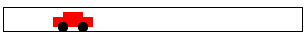) (check-expect (render 200) )
(check-expect (render 50) (place-image CAR 50 Y-CAR BACKGROUND)) (check-expect (render 200) (place-image CAR 200 Y-CAR BACKGROUND))
Because it is so useful to have DrRacket conduct the tests and not to check everything yourself manually, we immediately switch to this style of testing for the rest of the book. This form of testing is dubbed unit testing, and BSL’s unit-testing framework is especially tuned for novice programmers. One day you will switch to some other programming language; one of your first tasks will be to figure out its unit-testing framework.
3.6 Designing World Programs
While the previous chapter introduces the 2htdp/universe library in an ad hoc way, this section demonstrates how the design recipe also helps you create world programs systematically. It starts with a brief summary of the 2htdp/universe library based on data definitions and function signatures. Then it spells out the design recipe for world programs.
The teachpack expects that a programmer develops a data definition that represents the state of the world and a function render that knows how to create an image for every possible state of the world. Depending on the needs of the program, the programmer must then design functions that respond to clock ticks, keystrokes, and mouse events. Finally, an interactive program may need to stop when its current world belongs to a sub-class of states; end? recognizes these final states. Figure 18 spells out this idea in a schematic and simplified way.
; WorldState: data representing the current world (cw) ; WorldState -> Image ; when needed, big-bang obtains the image of the current ; state of the world by evaluating (render cw) (define (render cw) ...) ; WorldState -> WorldState ; for each tick of the clock, big-bang obtains the next ; state of the world from (clock-tick-handler cw) (define (clock-tick-handler cw) ...) ; WorldState String -> WorldState ; for each keystroke, big-bang obtains the next state ; from (keystroke-handler cw ke); ke represents the key (define (keystroke-handler cw ke) ...) ; WorldState Number Number String -> WorldState ; for each mouse gesture, big-bang obtains the next state ; from (mouse-event-handler cw x y me) where x and y are ; the coordinates of the event and me is its description (define (mouse-event-handler cw x y me) ...) ; WorldState -> Boolean ; after each event, big-bang evaluates (end? cw) (define (end? cw) ...)
Sample Problem Design a program that moves a car from left to right on the world canvas, three pixels per clock tick.


- For all those properties of the world that remain the same over time and are needed to render it as an Image, introduce constants. In BSL, we specify such constants via definitions. For the purpose of world programs, we distinguish between two kinds of constants:
“Physical” constants describe general attributes of objects in the world, such as the speed or velocity of an object, its color, its height, its width, its radius, and so forth. Of course these constants don’t really refer to physical facts, but many are analogous to physical aspects of the real world.
In the context of our sample problem, the radius of the car’s wheels and the distance between the wheels are such “physical” constants:Note how the second constant is computed from the first.Graphical constants are images of objects in the world. The program composes them into images that represent the complete state of the world.
Here are graphical constants for wheel images of our sample car:(define WHEEL (circle WHEEL-RADIUS "solid" "black")) We suggest you experiment in DrRacket’s interactions area to develop such graphical constants. (define SPACE (rectangle ... WHEEL-RADIUS ... "white")) (define BOTH-WHEELS (beside WHEEL SPACE WHEEL)) Graphical constants are usually computed, and the computations tend to involve physical constants and other images.
It is good practice to annotate constant definitions with a comment that explains what they mean. Those properties that change over time—
in reaction to clock ticks, keystrokes, or mouse actions— give rise to the current state of the world. Your task is to develop a data representation for all possible states of the world. The development results in a data definition, which comes with a comment that tells readers how to represent world information as data and how to interpret data as information about the world. Choose simple forms of data to represent the state of the world.
For the running example, it is the car’s distance from the left margin that changes over time. While the distance to the right margin changes, too, it is obvious that we need only one or the other to create an image. A distance is measured in numbers, so the following is an adequate data definition:
; A WorldState is a Number. ; interpretation the number of pixels between ; the left border of the scene and the car An alternative is to count the number of clock ticks that have passed and to use this number as the state of the world. We leave this design variant as an exercise.Once you have a data representation for the state of the world, you need to design a number of functions so that you can form a valid big-bang expression.
To start with, you need a function that maps any given state into an image so that big-bang can render the sequence of states as images:; render
Next you need to decide which kind of events should change which aspects of the world state. Depending on your decisions, you need to design some or all of the following three functions:; clock-tick-handler ; keystroke-handler ; mouse-event-handler Finally, if the problem statement suggests that the program should stop if the world has certain properties, you must design; end?
For the generic signatures and purpose statements of these functions, see figure 18. Adapt these generic purpose statements to the particular problems you solve so that readers know what they compute.In short, the desire to design an interactive program automatically creates several initial entries for your wish list. Work them off one by one and you get a complete world program.
Let’s work through this step for the sample program. While big-bang dictates that we must design a rendering function, we still need to figure out whether we want any event-handling functions. Since the car is supposed to move from left to right, we definitely need a function that deals with clock ticks. Thus, we get this wish list:; WorldState -> Image ; places the image of the car x pixels from ; the left margin of the BACKGROUND image (define (render x) BACKGROUND) ; WorldState -> WorldState ; adds 3 to x to move the car right (define (tock x) x) Note how we tailored the purpose statements to the problem at hand, with an understanding of how big-bang will use these functions.Finally, you need a main function. Unlike all other functions, a main function for world programs doesn’t demand design or testing. Its sole reason for existing is that you can launch your world program conveniently from DrRacket’s interactions area.
The one decision you must make concerns main’s arguments. For our sample problem, we opt for one argument: the initial state of the world. Here we go:; WorldState -> WorldState ; launches the program from some initial state (define (main ws) (big-bang ws [on-tick tock] [to-draw render])) Hence, you can launch this interactive program with> (main 13)
Naturally, you don’t have to use the name “WorldState” for the class of data that represents the states of the world. Any name will do as long as you use it consistently for the signatures of the event-handling functions. Also, you don’t have to use the names tock, end?, or render. You may name these functions whatever you like, as long as you use the same names when you write down the clauses of the big-bang expression. Lastly, you may have noticed that you may list the clauses of a big-bang expression in any order as long as you list the initial state first.
Let’s now work through the rest of the program design process, using the design recipe for functions and other design concepts spelled out so far.
(define WHEEL-RADIUS 5)
Develop your favorite image of an automobile so that WHEEL-RADIUS remains the single point of control.
; WorldState -> WorldState ; moves the car by 3 pixels for every clock tick (define (tock cw) cw)
; WorldState -> WorldState ; moves the car by 3 pixels for every clock tick ; examples: ; given: 20, expect 23 ; given: 78, expect 81 (define (tock cw) (+ cw 3))
> (tock 20) 23
> (tock 78) 81
Exercise 40. Formulate the examples as BSL tests, that is, using the check-expect form. Introduce a mistake. Re-run the tests.
; WorldState -> Image ; places the car into the BACKGROUND scene, ; according to the given world state (define (render cw) BACKGROUND)
To make examples for a rendering function, we suggest arranging a table like the upper half of figure 19. It lists the given world states and the desired scenes. For your first few rendering functions, you may wish to draw these images by hand.
cw
its image
50
100
150
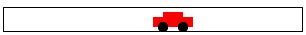
200
cw
an expression
50
(place-image CAR 50 Y-CAR BACKGROUND) 100
(place-image CAR 100 Y-CAR BACKGROUND) 150
(place-image CAR 150 Y-CAR BACKGROUND) 200
(place-image CAR 200 Y-CAR BACKGROUND)


Even though this kind of image table is intuitive and explains what the
running function is going to display—
; WorldState -> Image ; places the car into the BACKGROUND scene, ; according to the given world state (define (render cw) (place-image CAR cw Y-CAR BACKGROUND))
(define tree (underlay/xy (circle 10 "solid" "green") 9 15 (rectangle 2 20 "solid" "brown")))
After settling on an initial data representation for world states, a careful
programmer may have to revisit this fundamental design decision during the
rest of the design process. For example, the data definition for the sample
problem represents the car as a point. But (the image of) the car isn’t
just a mathematical point without width and height. Hence, the
interpretation statement—
Exercise 42. Modify the interpretation of the sample data definition so that a state denotes the x-coordinate of the right-most edge of the car.
; An AnimationState is a Number. ; interpretation the number of clock ticks ; since the animation started
Design the functions tock and render. Then develop a big-bang expression so that once again you get an animation of a car traveling from left to right across the world’s canvas.
How do you think this program relates to animate from Prologue: How to Program?
Use the data definition to design a program that moves the car according to a sine wave. (Don’t try to drive like that.)
Dealing with mouse movements is occasionally tricky because they aren’t exactly what they seem to be. For a first idea of why that is, read On Mice and Keys.
Sample Problem Design a program that moves a car across the world canvas, from left to right, at the rate of three pixels per clock tick. If the mouse is clicked anywhere on the canvas, the car is placed at the x-coordinate of that click.
There are no new properties, meaning we do not need new constants.
The program is still concerned with just one property that changes over time, the x-coordinate of the car. Hence, the data representation suffices.
- The revised problem statement calls for a mouse-event handler, without giving up on the clock-based movement of the car. Hence, we state an appropriate wish:
; WorldState Number Number String -> WorldState ; places the car at x-mouse ; if the given me is "button-down" (define (hyper x-position-of-car x-mouse y-mouse me) x-position-of-car) - Lastly, we need to modify main to take care of mouse events. All this requires is the addition of an on-mouse clause that defers to the new entry on our wish list:After all, the modified problem calls for dealing with mouse clicks and everything else remains the same.
; WorldState Number Number String -> WorldState ; places the car at x-mouse ; if the given me is "button-down" ; given: 21 10 20 "enter" ; wanted: 21 ; given: 42 10 20 "button-down" ; wanted: 10 ; given: 42 10 20 "move" ; wanted: 42 (define (hyper x-position-of-car x-mouse y-mouse me) x-position-of-car)
Exercise 44. Formulate the examples as BSL tests. Click RUN and watch them fail.
; WorldState Number Number String -> WorldState ; places the car at x-mouse ; if the given me is "button-down" (define (hyper x-position-of-car x-mouse y-mouse me) (cond [(string=? "button-down" me) x-mouse] [else x-position-of-car]))
(main 1)
You may wonder why this program modification is so straightforward. There
are really two reasons. First, this book and its software strictly separate
the data that a program tracks—
3.7 Virtual Pet Worlds
This exercise section introduces the first two elements of a virtual pet game. It starts with just a display of a cat that keeps walking across the canvas. Of course, all the walking makes the cat unhappy and its unhappiness shows. As with all pets, you can try petting, which helps some, or you can try feeding, which helps a lot more.
(define cat1 )
Exercise 45. Design a “virtual cat” world program that continuously moves the cat from left to right. Let’s call it cat-prog and let’s assume it consumes the starting position of the cat. Furthermore, make the cat move three pixels per clock tick. Whenever the cat disappears on the right, it reappears on the left. You may wish to read up on the modulo function.
(define cat2
)
Exercise 47. Design a world program that maintains and displays a “happiness gauge.” Let’s call it gauge-prog, and let’s agree that the program consumes the maximum level of happiness. The gauge display starts with the maximum score, and with each clock tick, happiness decreases by -0.1; it never falls below 0, the minimum happiness score. Every time the down arrow key is pressed, happiness decreases by 1/5; every time the up arrow is pressed, happiness jumps by 1/3.
To show the level of happiness, we use a scene with a solid, red rectangle with a black frame. For a happiness level of 0, the red bar should be gone; for the maximum happiness level of 100, the bar should go all the way across the scene.
Note When you know enough, we will explain how to combine the gauge program with the solution of exercise 45. Then we will be able to help the cat because as long as you ignore it, it becomes less happy. If you pet the cat, it becomes happier. If you feed the cat, it becomes much, much happier. So you can see why you want to know a lot more about designing world programs than these first three chapters can tell you.
4 Intervals, Enumerations, and Itemizations
At the moment, you have four choices to represent information as data: numbers, strings, images, and Boolean values. For many problems this is enough, but there are many more for which these four collections of data in BSL (or other programming languages) don’t suffice. Actual designers need additional ways of representing information as data.
At a minimum, good programmers must learn to design programs with restrictions on these built-in collections. One way to restrict is to enumerate a bunch of elements from a collection and to say that these are the only ones that are going to be used for some problem. Enumerating elements works only when there is a finite number of them. To accommodate collections with “infinitely” many elements, we introduce intervals, which are collections of elements that satisfy a specific property.
Infinite may just mean “so large that enumerating the elements is entirely impractical.”
Defining enumerations and intervals means distinguishing among different kinds of elements. To distinguish in code requires conditional functions, that is, functions that choose different ways of computing results depending on the value of some argument. Both Many Ways to Compute and Mixing It Up with Booleans illustrate with examples of how to write such functions. Neither section uses design, however. Both just present some new construct in your favorite programming language (that’s BSL), and offer some examples on how to use it.
In this chapter, we discuss a general design for enumerations and intervals, new forms of data descriptions. We start with a second look at the cond expression. Then we go through three different kinds of data descriptions: enumerations, intervals, and itemizations. An enumeration lists every single piece of data that belongs to it, while an interval specifies a range of data. The last one, itemizations, mixes the first two, specifying ranges in one clause of its definition and specific pieces of data in another. The chapter ends with the general design strategy for such situations.
4.1 Programming with Conditionals
(cond [ConditionExpression1 ResultExpression1] [ConditionExpression2 ResultExpression2] ... Brackets make cond lines stand out. It is fine to use ( ... ) in place of [ ... ]. [ConditionExpressionN ResultExpressionN])
A cond line is also known as a cond clause.
(define (next traffic-light-state) (cond [(string=? "red" traffic-light-state) "green"] [(string=? "green" traffic-light-state) "yellow"] [(string=? "yellow" traffic-light-state) "red"]))
A note on pragmatics: Contrast cond expressions with if expressions from Mixing It Up with Booleans. The latter distinguish one situation from all others. As such, if expressions are much less suited for multi-situation contexts; they are best used when all we wish to say is “one or the other.” We therefore always use cond for situations when we wish to remind the reader of our code that some distinct situations come directly from data definitions. For other pieces of code, we use whatever construct is most convenient.
When the conditions get too complex in a cond expression, you occasionally wish to say something like "in all other cases." For these kinds of problems, cond expressions permit the use of the else keyword for the very last cond line:
(cond [ConditionExpression1 ResultExpression1] [ConditionExpression2 ResultExpression2] ... [else DefaultResultExpression])
> (cond [(> x 0) 10] [else 20] [(< x 10) 30]) cond:found an else clause that isn't the last clause in its cond expression
; A PositiveNumber is a Number greater than/equal to 0. ; PositiveNumber -> String ; computes the reward level from the given score s
(define (reward s) (cond [(<= 0 s 10) "bronze"] [(and (< 10 s) (<= s 20)) "silver"] [(< 20 s) "gold"]))
(define (reward s) (cond [(<= 0 s 10) "bronze"] [(and (< 10 s) (<= s 20)) "silver"] [else "gold"]))
s is in PositiveNumber
(<= 0 s 10) is #false
4.2 Computing Conditionally
Just looking at the cond expression, you cannot predict which of the three cond clauses is going to be used. And that is the point of a function. The function deals with many different inputs, for example, 2, 3, 7, 18, 29. For each of these inputs, it may have to proceed in a different manner. Differentiating among the varying classes of inputs is the purpose of the cond expression.
(reward 3)
(reward 3) ; say “equals” == (cond [(<= 0 3 10) "bronze"] [(and (< 10 3) (<= 3 20)) "silver"] [else "gold"])
(reward 3) == (cond [(<= 0 3 10) "bronze"] [(and (< 10 3) (<= 3 20)) "silver"] [else "gold"]) == (cond [#true "bronze"] [(and (< 10 3) (<= 3 20)) "silver"] [else "gold"]) == "bronze"
(reward 21) == (cond [(<= 0 21 10) "bronze"] [(and (< 10 21) (<= 21 20)) "silver"] [else "gold"]) == (cond [#false "bronze"] [(and (< 10 21) (<= 21 20)) "silver"] [else "gold"]) == (cond [(and (< 10 21) (<= 21 20)) "silver"] [else "gold"])
(cond [(and (< 10 21) (<= 21 20)) "silver"] [else "gold"]) == (cond [(and #true (<= 21 20)) "silver"] [else "gold"]) == (cond [(and #true #false) "silver"] [else "gold"]) == (cond [#false "silver"] [else "gold"]) == (cond [else "gold"]) == "gold"
Exercise 48. Enter the definition of reward followed by (reward 18) into the definitions area of DrRacket and use the stepper to find out how DrRacket evaluates applications of the function.
(define WIDTH 100) (define HEIGHT 60) (define MTSCN (empty-scene WIDTH HEIGHT)) (define ROCKET )
(define ROCKET-CENTER-TO-TOP (- HEIGHT (/ (image-height ROCKET) 2))) (define (create-rocket-scene.v5 h) (cond [(<= h ROCKET-CENTER-TO-TOP) (place-image ROCKET 50 h MTSCN)] [(> h ROCKET-CENTER-TO-TOP) (place-image ROCKET 50 ROCKET-CENTER-TO-TOP MTSCN)])) Figure 20: Recall from One Program, Many Definitions
(place-image ROCKET X ... MTSCN)
Reformulate create-rocket-scene.v5 to use a nested expression; the resulting function mentions place-image only once.
4.3 Enumerations
; A MouseEvt is one of these Strings: ; – "button-down" ; – "button-up" ; – "drag" ; – "move" ; – "enter" ; – "leave"
; A TrafficLight is one of the following Strings: ; – "red" ; – "green" ; – "yellow" ; interpretation the three strings represent the three ; possible states that a traffic light may assume
; TrafficLight -> TrafficLight ; yields the next state given current state s (check-expect (traffic-light-next "red") "green") (define (traffic-light-next s) (cond [(string=? "red" s) "green"] [(string=? "green" s) "yellow"] [(string=? "yellow" s) "red"]))
Exercise 50. If you copy and paste the above function definition into the definitions area of DrRacket and click RUN, DrRacket highlights two of the three cond lines. This coloring tells you that your test cases do not cover the full conditional. Add enough tests to make DrRacket happy.
Exercise 51. Design a big-bang program that simulates a traffic light for a given duration. The program renders the state of a traffic light as a solid circle of the appropriate color, and it changes state on every clock tick. Hint Read the documentation for big-bang; there is a reason all these “words” are linked to their documentation. What is the most appropriate initial state? Ask your engineering friends.
The main idea of an enumeration is that it defines a collection of data as a finite number of pieces of data. Each item explicitly spells out which piece of data belongs to the class of data that we are defining. Usually, the piece of data is just shown as is; on some occasions, the item of an enumeration is an English sentence that describes a finite number of elements of pieces of data with a single phrase.
; A 1String is a String of length 1, ; including ; – "\\" (the backslash), ; – " " (the space bar), ; – "\t" (tab), ; – "\r" (return), and ; – "\b" (backspace). ; interpretation represents keys on the keyboard
(= (string-length s) 1)
; A 1String is one of: ; – "q" ; – "w" ; – "e" ; – "r" ; ... ; – "\t" ; – "\r" ; – "\b"
; A KeyEvent is one of: ; – 1String ; – "left" ; – "right" ; – "up" ; – ...
; WorldState KeyEvent -> ... (define (handle-key-events w ke) (cond [(= (string-length ke) 1) ...] [(string=? "left" ke) ...] [(string=? "right" ke) ...] [(string=? "up" ke) ...] [(string=? "down" ke) ...] ...))
; A Position is a Number. ; interpretation distance between the left margin and the ball ; Position KeyEvent -> Position ; computes the next location of the ball (check-expect (keh 13 "left") 8) (check-expect (keh 13 "right") 18) (check-expect (keh 13 "a") 13)
(define (keh p k) (cond [(= (string-length k) 1) p] [(string=? "left" k) (- p 5)] [(string=? "right" k) (+ p 5)] [else p]))
(define (keh p k) (cond [(string=? "left" k) (- p 5)] [(string=? "right" k) (+ p 5)] [else p]))
Sample Problem Design a key-event handler that moves a red dot left or right on a horizontal line in response to pressing the left and right arrow keys.
4.4 Intervals
Sample Problem Design a program that simulates the descent of a UFO.
; A WorldState is a Number. ; interpretation number of pixels between the top and the UFO (define WIDTH 300) ; distances in terms of pixels (define HEIGHT 100) (define CLOSE (/ HEIGHT 3)) (define MTSCN (empty-scene WIDTH HEIGHT)) (define UFO (overlay (circle 10 "solid" "green") ...)) ; WorldState -> WorldState (define (main y0) (big-bang y0 [on-tick nxt] [to-draw render])) ; WorldState -> WorldState ; computes next location of UFO (check-expect (nxt 11) 14) (define (nxt y) (+ y 3)) ; WorldState -> Image ; places UFO at given height into the center of MTSCN (check-expect (render 11) (place-image UFO ... 11 MTSCN)) (define (render y) (place-image UFO ... y MTSCN))
Sample Problem Add a status line. It says "descending" when the UFO’s height is above one third of the height of the canvas. It switches to "closing in" below that. And finally, when the UFO has reached the bottom of the canvas, the status notifies the player that the UFO has "landed". You are free to use appropriate colors for the status line.
In this case, we don’t have a finite enumeration of distinct elements or distinct sub-classes of data. After all, conceptually, the interval between 0 and HEIGHT (for some number greater than 0) contains an infinite number of numbers and a large number of integers. Therefore we use intervals to superimpose some organization on the generic data definition, which just uses “numbers” to describe the class of coordinates.
An interval is a description of a class of numbers via boundaries. The simplest interval has two boundaries: left and right. If the left boundary is to be included in the interval, we say it is closed on the left. Similarly, a right-closed interval includes its right boundary. Finally, if an interval does not include a boundary, it is said to be open at that boundary.
[3,5] is a closed interval:
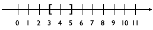
(3,5] is a left-open interval:
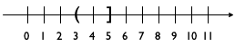
[3,5) is a right-open interval:
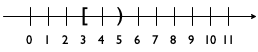
and (3,5) is an open interval:
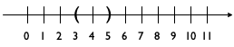
Exercise 52. Which integers are contained in the four intervals above?
; A WorldState falls into one of three intervals: ; – between 0 and CLOSE ; – between CLOSE and HEIGHT ; – below HEIGHT
Specifically, there are three intervals, which we may picture as follows:
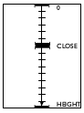
 ). The picture identifies three intervals in this manner:
). The picture identifies three intervals in this manner:
the upper interval goes from 0 to CLOSE;
the middle one starts at CLOSE and reaches HEIGHT;On a plain number line, the last interval starts at HEIGHT and goes on forever. and
the lower, invisible interval is just a single line at HEIGHT.
Visualizing the data definition in this manner helps with the design of functions in two ways. First, it immediately suggests how to pick examples. Clearly we want the function to work inside of all the intervals, and we want the function to work properly at the ends of each interval. Second, the image tells us that we need to formulate a condition that determines whether or not some “point” is within one of the intervals.
Putting the two together also raises a question, namely, how exactly the function deals with the end points. In the context of our example, two points on the number line belong to two intervals: CLOSE belongs to both the upper interval and the middle one, while HEIGHT seems to fall into both the middle one and the lowest one. Such overlaps usually cause problems for programs, and they ought to be avoided.
; WorldState -> WorldState (define (f y) (cond [(<= 0 y CLOSE) ...] [(<= CLOSE y HEIGHT) ...] [(>= y HEIGHT) ...]))
; WorldState -> WorldState (define (g y) (cond [(<= 0 y CLOSE) ...] [(and (< CLOSE y) (<= y HEIGHT)) ...] [(> y HEIGHT) ...]))
; WorldState -> Image ; adds a status line to the scene created by render (check-expect (render/status 10) (place-image (text "descending" 11 "green") 10 10 (render 10))) (define (render/status y) (cond [(<= 0 y CLOSE) (place-image (text "descending" 11 "green") 10 10 (render y))] [(and (< CLOSE y) (<= y HEIGHT)) (place-image (text "closing in" 11 "orange") 10 10 (render y))] [(> y HEIGHT) (place-image (text "landed" 11 "red") 10 10 (render y))]))
Given all that, we can complete the definition of the function that adds the requested status line to our UFO animation; see figure 23 for the complete definition. The function uses a cond expression to distinguish the three intervals. In each cond clause, the ResultExpression uses render (from figure 22) to create the image with the descending UFO and then places an appropriate text at position (10,10) with place-image.
; WorldState -> WorldState (define (main y0) (big-bang y0 [on-tick nxt] [to-draw render/status]))
Sample Problem Add a status line, positioned at (20,20), that says “descending” when the UFO’s height is above one third of the height of the canvas. ...
; WorldState -> Image ; adds a status line to the scene created by render (check-expect (render/status 42) (place-image (text "closing in" 11 "orange") 20 20 (render 42))) (define (render/status y) (place-image (cond [(<= 0 y CLOSE) (text "descending" 11 "green")] [(and (< CLOSE y) (<= y HEIGHT)) (text "closing in" 11 "orange")] [(> y HEIGHT) (text "landed" 11 "red")]) 20 20 (render y)))
At this point, you have no choice but to change the function render/status at six distinct places because you have three copies of one external piece of information: the location of the status line. To avoid multiple changes for a single element, programmers try to avoid copies. You have two choices to fix this problem. The first one is to use constant definitions, which you might recall from early chapters. The second one is to think of the cond expression as an expression that may appear anywhere in a function, including in the middle of some other expression; see figure 24 and compare with figure 23. In this revised definition of render/status, the cond expression is the first argument to place-image. As you can see, its result is always a text image that is placed at position (20,20) into the image created by (render y).
4.5 Itemizations
An interval distinguishes different sub-classes of numbers, which, in principle, is an infinitely large class. An enumeration spells out item for item the useful elements of an existing class of data. Some data definitions need to include elements from both. They use itemizations, which generalize intervals and enumerations. They allow the combination of any already-defined data classes with each other and with individual pieces of data.
Consider the following example, a rewrite of an important data definition from Enumerations:
; A KeyEvent is one of: ; – 1String ; – "left" ; – "right" ; – "up" ; – ...
; String -> NorF ; converts the given string into a number; ; produces #false if impossible (define (string->number s) (... s ...))
; An NorF is one of: ; – #false ; – a Number
; NorF -> Number ; adds 3 to the given number; 3 otherwise (check-expect (add3 #false) 3) (check-expect (add3 0.12) 3.12) (define (add3 x) (cond [(false? x) 3] [else (+ x 3)]))
Let’s study a somewhat more purposeful design task:
Sample Problem Design a program that launches a rocket when the user of your program presses the space bar. The program first displays the rocket sitting at the bottom of the canvas. Once launched, it moves upward at three pixels per clock tick.
; An LR (short for launching rocket) is one of: ; – "resting" ; – NonnegativeNumber ; interpretation "resting" represents a grounded rocket ; a number denotes the height of a rocket in flight
the word “height” could refer to the distance between the ground and the rocket’s point of reference, say, its center; or
it could mean the distance between the top of the canvas and the reference point.
To drive home this choice, exercise 57 below asks you to solve the exercises of this section using the first interpretation of height.
Exercise 53. The design recipe for world programs demands that you translate information into data and vice versa to ensure a complete understanding of the data definition. It’s best to draw some world scenarios and to represent them with data and, conversely, to pick some data examples and to draw pictures that match them. Do so for the LR definition, including at least HEIGHT and 0 as examples.
Sample Problem Design a program that launches a rocket when the user presses the space bar. At that point, the simulation starts a countdown for three ticks, before it displays the scenery of a rising rocket. The rocket should move upward at a rate of three pixels per clock tick.
(define HEIGHT 300) ; distances in pixels (define WIDTH 100) (define YDELTA 3) (define BACKG (empty-scene WIDTH HEIGHT)) (define ROCKET (rectangle 5 30 "solid" "red")) (define CENTER (/ (image-height ROCKET) 2))
; An LRCD (for launching rocket countdown) is one of: ; – "resting" ; – a Number between -3 and -1 ; – a NonnegativeNumber ; interpretation a grounded rocket, in countdown mode, ; a number denotes the number of pixels between the ; top of the canvas and the rocket (its height)
; LRCD -> Image ; renders the state as a resting or flying rocket (define (show x) BACKG) ; LRCD KeyEvent -> LRCD ; starts the countdown when space bar is pressed, ; if the rocket is still resting (define (launch x ke) x) ; LRCD -> LRCD ; raises the rocket by YDELTA, ; if it is moving already (define (fly x) x)
(check-expect (show "resting") (place-image ROCKET 10 HEIGHT BACKG)) (check-expect (show -2) (place-image (text "-2" 20 "red") 10 (* 3/4 WIDTH) (place-image ROCKET 10 HEIGHT BACKG))) (check-expect (show 53) (place-image ROCKET 10 53 BACKG))
A close look at the examples reveals that making examples also means making choices. Nothing in the problem statement actually demands how exactly the rocket is displayed before it is launched, but doing so is natural. Similarly, nothing says to display a number during the countdown, yet it adds a nice touch. Lastly, if you solved exercise 53 you also know that 0 and HEIGHT are special points for the third clause of the data definition.
Clearly, (show -3) and (show -1) must produce images like the one for (show -2). After all, the rocket still rests on the ground, even if the countdown numbers differ.
- The case for (show HEIGHT) is different. According to our agreement, the value HEIGHT represents the state when the rocket has just been launched. Pictorially this means the rocket is still resting on the ground. Based on the last test case above, here is the test case that expresses this insight:
(check-expect (show HEIGHT) (place-image ROCKET 10 HEIGHT BACKG)) Except that if you evaluate the “expected value” expression by itself in DrRacket’s interactions area, you see that the rocket is halfway underground. This shouldn’t be the case, of course, meaning that we need to adjust this test case and the above:(check-expect (show HEIGHT) (place-image ROCKET 10 (- HEIGHT CENTER) BACKG)) (check-expect (show 53) (place-image ROCKET 10 (- 53 CENTER) BACKG)) Finally, determine the result you now expect from (show 0). It is a simple but revealing exercise.
Exercise 54. Why would it be incorrect to use (string=? "resting" x) as the first condition in show? Conversely, formulate a completely accurate condition, that is, a Boolean expression that evaluates to #true precisely when x belongs to the first sub-class of LRCD.
(define (show x) (cond [(string? x) (place-image ROCKET 10 (- HEIGHT CENTER) BACKG)] [(<= -3 x -1) (place-image (text (number->string x) 20 "red") 10 (* 3/4 WIDTH) (place-image ROCKET 10 (- HEIGHT CENTER) BACKG))] [(>= x 0) (place-image ROCKET 10 (- x CENTER) BACKG)]))
(place-image ROCKET 10 (- ... CENTER) BACKG)
(check-expect (launch "resting" " ") -3) (check-expect (launch "resting" "a") "resting") (check-expect (launch -3 " ") -3) (check-expect (launch -1 " ") -1) (check-expect (launch 33 " ") 33) (check-expect (launch 33 "a") 33)
(define (launch x ke) (cond [(string? x) (if (string=? " " ke) -3 x)] [(<= -3 x -1) x] [(>= x 0) x]))
; LRCD -> LRCD ; raises the rocket by YDELTA if it is moving already (check-expect (fly "resting") "resting") (check-expect (fly -3) -2) (check-expect (fly -2) -1) (check-expect (fly -1) HEIGHT) (check-expect (fly 10) (- 10 YDELTA)) (check-expect (fly 22) (- 22 YDELTA)) (define (fly x) (cond [(string? x) x] [(<= -3 x -1) (if (= x -1) HEIGHT (+ x 1))] [(>= x 0) (- x YDELTA)]))
The design of fly—
Exercise 56. Define main2 so that you can launch the rocket and watch it lift off. Read up on the on-tick clause to determine the length of one tick and how to change it.
If you watch the entire launch, you will notice that once the rocket reaches the top something curious happens. Explain. Add a stop-when clause to main2 so that the simulation of the liftoff stops gracefully when the rocket is out of sight.
The solution of exercise 56 yields a complete, working program, but one that behaves a bit strangely. Experienced programmers tell you that using negative numbers to represent the countdown phase is too “brittle.” The next chapter introduces the means to provide a good data definition for this problem. Before we go there, however, the next section spells out in detail how to design programs that consume data described by itemizations.
Exercise 57. Recall that the word “height” forced us to choose one of two possible interpretations. Now that you have solved the exercises in this section, solve them again using the first interpretation of the word. Compare and contrast the solutions.
4.6 Designing with Itemizations
What the preceding three sections have clarified is that the design of functions
can—
Sample Problem The state of Tax Land has created a three-stage sales tax to cope with its budget deficit. Inexpensive items, those costing less than $1,000, are not taxed. Luxury items, with a price of more than $10,000, are taxed at the rate of eight percent (8.00%). Everything in between comes with a five percent (5.00%) markup.
Design a function for a cash register that, given the price of an item, computes the sales tax.
When the problem statement distinguishes different classes of input information, you need carefully formulated data definitions.
A data definition must use distinct clauses for each sub-class of data or in some cases just individual pieces of data. Each clause specifies a data representation for a particular sub-class of information. The key is that each sub-class of data is distinct from every other class, so that our function can proceed by analyzing disjoint cases.
Our sample problem deals with prices and taxes, which are usually positive numbers. It also clearly distinguishes three ranges:
; A Price falls into one of three intervals: ; — 0 through 1000 ; — 1000 through 10000 ; — 10000 and above. ; interpretation the price of an item Do you understand how these ranges relate to the original problem?As far as the signature, purpose statement, and function header are concerned, you proceed as before.
For functional examples, however, it is imperative that you pick at least one example from each sub-class in the data definition. Also, if a sub-class is a finite range, be sure to pick examples from the boundaries of the range and from its interior.
Since our sample data definition involves three distinct intervals, let’s pick all boundary examples and one price from inside each interval and determine the amount of tax for each: 0, 537, 1000, 1282, 10000, and 12017.
Stop! Try to calculate the tax for each of these prices.
Here is our first attempt, with rounded tax amounts:0
537
1000
1282
10000
12017
0
0
????
64
?????
961
The question marks point out that the problem statement uses the vague phrase “those costing less than $1,000” and “more than $10,000” to specify the tax table. While a programmer may jump to the conclusion that these words mean “strictly less” or “strictly more,” the lawmakers may have meant to say “less than or equal to” or “more than or equal to,” respectively. Being skeptical, we decide here that Tax Land legislators always want more money to spend, so the tax rate for $1,000 is 5% and the rate for $10,000 is 8%. A programmer at a tax company would have to ask a tax-law specialist.Now that we have figured out how the boundaries are to be interpreted in the domain, we could refine the data definition. We trust you can do this on your own.
Before we go, let’s turn some of the examples into test cases:(check-expect (sales-tax 537) 0) (check-expect (sales-tax 1000) (* 0.05 1000)) (check-expect (sales-tax 12017) (* 0.08 12017)) Take a close look. Instead of just writing down the expected result, we write down how to compute the expected result. This makes it easier later to formulate the function definition.Stop! Write down the remaining test cases. Think about why you may need more test cases than sub-classes in the data definition.
the template mirrors the organization of sub-classes with a cond.
This slogan means two concrete things. First, the function’s body must be a conditional expression with as many clauses as there are distinct sub-classes in the data definition. If the data definition mentions three distinct sub-classes of input data, you need three cond clauses; if it has seventeen sub-classes, the cond expression contains seventeen clauses. Second, you must formulate one condition expression per cond clause. Each expression involves the function parameter and identifies one of the sub-classes of data in the data definition:(define (sales-tax p) (cond [(and (<= 0 p) (< p 1000)) ...] [(and (<= 1000 p) (< p 10000)) ...] [(>= p 10000) ...])) When you have finished the template, you are ready to define the function. Given that the function body already contains a schematic cond expression, it is natural to start from the various cond lines. For each cond line, you may assume that the input parameter meets the condition and so you exploit the corresponding test cases. To formulate the corresponding result expression, you write down the computation for this example as an expression that involves the function parameter. Ignore all other possible kinds of input data when you work on one line; the other cond clauses take care of those.
(define (sales-tax p) (cond [(and (<= 0 p) (< p 1000)) 0] [(and (<= 1000 p) (< p 10000)) (* 0.05 p)] [(>= p 10000) (* 0.08 p)])) Finally, run the tests and ensure that they cover all cond clauses.
What do you do when one of your test cases fails? Review the end of Designing Functions concerning test failures.
Exercise 58. Introduce constant definitions that separate the intervals for low prices and luxury prices from the others so that the legislators in Tax Land can easily raise the taxes even more.
4.7 Finite State Worlds
With the design knowledge in this chapter, you can develop a complete simulation of American traffic lights. When such a light is green and it is time to stop the traffic, the light turns yellow, and, after that, it turns red. When the light is red and it is time to get the traffic going, the light simply switches to green.

The left-hand side of Figure 26 summarizes this description as a state transition diagram. Such a diagram consists of states and arrows that connect these states. Each state depicts a traffic light in one particular configuration: red, yellow, or green. Each arrow shows how the world can change, from which state it can transition to another state. Our sample diagram contains three arrows, because there are three possible ways in which the traffic light can change. Labels on the arrows indicate the reason for changes; a traffic light transitions from one state to another as time passes.
In many situations, state transition diagrams have only a finite number of states and arrows. Computer scientists call such diagrams finite state machines (FSM), also known as finite state automata (FSA). Despite their simplicity, FSMs/FSAs play an important role in computer science.
To create a world program for an FSA, we must first pick a data representation for the possible “states of the world,” which, according to Designing World Programs, represents those aspects of the world that may change in some ways as opposed to those that remain the same. In the case of our traffic light, what changes is the color of the light, that is, which bulb is turned on. The size of the bulbs, their arrangement (horizontal or vertical), and other aspects don’t change. Since there are only three states, we reuse the string-based data definition of TrafficLight from above.
The right-hand side of figure 26 is a diagrammatic interpretation of the TrafficLight data definition. Like the diagram in figure 26, it consists of three states, arranged in such a way that it is easy to view each data element as a representation of a concrete configuration. Also, the arrows are now labeled with tick to suggest that our world program uses the passing of time as the trigger that changes the state of the traffic light. If we wanted to simulate a manually operated light, we might choose transitions based on keystrokes.
; TrafficLight -> TrafficLight ; yields the next state, given current state cs (define (tl-next cs) cs) ; TrafficLight -> Image ; renders the current state cs as an image (define (tl-render current-state) (empty-scene 90 30))
; TrafficLight -> TrafficLight ; simulates a clock-based American traffic light (define (traffic-light-simulation initial-state) (big-bang initial-state [to-draw tl-render] [on-tick tl-next 1]))
Complete the design of tl-render and tl-next. Start with copying TrafficLight, tl-next, and tl-render into DrRacket’s definitions area.
(check-expect (tl-render "red") )
(check-expect (tl-render "yellow") )
; An N-TrafficLight is one of: ; – 0 interpretation the traffic light shows red ; – 1 interpretation the traffic light shows green ; – 2 interpretation the traffic light shows yellow
; N-TrafficLight -> N-TrafficLight ; yields the next state, given current state cs (define (tl-next-numeric cs) (modulo (+ cs 1) 3))
Does the tl-next function convey its intention more clearly than the tl-next-numeric function? If so, why? If not, why not?
(define RED 0) (define GREEN 1) (define YELLOW 2) ; An S-TrafficLight is one of: ; – RED ; – GREEN ; – YELLOW
; S-TrafficLight -> S-TrafficLight ; yields the next state, given current state cs
(check-expect (tl-next- ... RED) YELLOW) (check-expect (tl-next- ... YELLOW) GREEN)
(define (tl-next-numeric cs) (modulo (+ cs 1) 3))
(define (tl-next-symbolic cs) (cond [(equal? cs RED) GREEN] [(equal? cs GREEN) YELLOW] [(equal? cs YELLOW) RED]))
Aside The equal? function in figure 27 compares two arbitrary values, regardless of what these values are. Equality is a complicated topic in the world of programming. End
Sample Problem Design a world program that simulates the working of a door with an automatic door closer. If this kind of door is locked, you can unlock it with a key. An unlocked door is closed, but someone pushing at the door opens it. Once the person has passed through the door and lets go, the automatic door takes over and closes the door again. When a door is closed, it can be locked again.
To tease out the essential elements, we again draw a transition diagram; see the left-hand side of figure 28. Like the traffic light, the door has three distinct states: locked, closed, and open. Locking and unlocking are the activities that cause the door to transition from the locked to the closed state and vice versa. As for opening an unlocked door, we say that one needs to push the door open. The remaining transition is unlike the others because it doesn’t require any activities by anyone or anything else. Instead, the door closes automatically over time. The corresponding transition arrow is labeled with *time* to emphasize this.
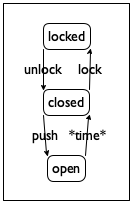 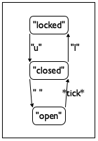
Figure 28: A transition diagram for a door with an automatic closer
(define LOCKED "locked") (define CLOSED "closed") (define OPEN "open")
; A DoorState is one of: ; – LOCKED ; – CLOSED ; – OPEN
The next step of a world design demands that we translate the chosen
actions in our domain—
door-closer, which closes the door during one tick;
door-action, which acts on it in response to pressing a key; and
door-render, which translates the current state into an image.
; DoorState -> DoorState ; closes an open door over the period of one tick (define (door-closer state-of-door) state-of-door)
given state
desired state
LOCKED
LOCKED
CLOSED
CLOSED
OPEN
CLOSED
(define (door-closer state-of-door) (cond [(string=? LOCKED state-of-door) ...] [(string=? CLOSED state-of-door) ...] [(string=? OPEN state-of-door) ...]))
(define (door-closer state-of-door) (cond [(string=? LOCKED state-of-door) LOCKED] [(string=? CLOSED state-of-door) CLOSED] [(string=? OPEN state-of-door) CLOSED]))
; DoorState KeyEvent -> DoorState ; turns key event k into an action on state s (define (door-action s k) s)
given state
given key event
desired state
LOCKED
"u"
CLOSED
CLOSED
"l"
LOCKED
CLOSED
" "
OPEN
OPEN
—
OPEN
(check-expect (door-action LOCKED "u") CLOSED) (check-expect (door-action CLOSED "l") LOCKED) (check-expect (door-action CLOSED " ") OPEN) (check-expect (door-action OPEN "a") OPEN) (check-expect (door-action CLOSED "a") CLOSED) (define (door-action s k) (cond [(and (string=? LOCKED s) (string=? "u" k)) CLOSED] [(and (string=? CLOSED s) (string=? "l" k)) LOCKED] [(and (string=? CLOSED s) (string=? " " k)) OPEN] [else s]))
; DoorState -> Image ; translates the state s into a large text image (check-expect (door-render CLOSED) (text CLOSED 40 "red")) (define (door-render s) (text s 40 "red"))
; DoorState -> DoorState ; simulates a door with an automatic door closer (define (door-simulation initial-state) (big-bang initial-state [on-tick door-closer] [on-key door-action] [to-draw door-render]))
Exercise 62. During a door simulation the “open” state is barely visible. Modify door-simulation so that the clock ticks once every three seconds. Rerun the simulation.
5 Adding Structure
Suppose you want to design a world program that simulates a ball bouncing back and forth on a straight vertical line between the floor and ceiling of some imaginary, perfect room. Assume that it always moves two pixels per clock tick. If you follow the design recipe, your first goal is to develop a data representation for what changes over time. Here, the ball’s position and its direction change over time, but that’s two values while big-bang keeps track of just one. Thus the question arises how one piece of data can represent two changing quantities of information.
Mathematicians know tricks that “merge” two numbers into a single number such that it is possible to retrieve the original ones. Programmers consider these kinds of tricks evil because they obscure a program’s true intentions.
Here is another scenario that raises the same question. Your cell phone is mostly a few million lines of code wrapped in plastic. Among other things, it administrates your contacts. Each contact comes with a name, a phone number, an email address, and perhaps some other information. When you have lots of contacts, each single contact is best represented as a single piece of data; otherwise the various pieces could get mixed up by accident.
Because of such programming problems, every programming language provides some mechanism to combine several pieces of data into a single piece of compound data and ways to retrieve the constituent values when needed. This chapter introduces BSL’s mechanics, so-called structure type definitions, and how to design programs that work on compound data.
5.1 From Positions to posn Structures
A position on a world canvas is uniquely identified by two pieces of data: the distance from the left margin and the distance from the top margin. The first is called an x-coordinate and the second one is the y-coordinate.
(make-posn 3 4)
Before doing anything else, let’s take a look at the laws of computation for posn structures. That way, we can both create functions that process posn structures and predict what they compute.
5.2 Computing with posns
While functions and the laws of functions are completely familiar from pre-algebra, posn structures appear to be a new idea. Then again, the concept of a posn ought to look like the Cartesian points or positions in the plane you may have encountered before.
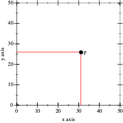
Selecting a Cartesian point’s pieces is also a familiar process. For example,We thank Neil Toronto for the plot library. when a teacher says, “take a look at the graph of figure 29 and tell me what px and py are,” you are likely to answer 31 and 26, respectively, because you know that you need to read off the values where the vertical and horizontal lines that radiate out from p hit the axes.
(posn-x p) == ; DrRacket replaces p with (make-posn 31 26) (posn-x (make-posn 31 26)) == ; DrRacket uses the law for posn-x 31
5.3 Programming with posn
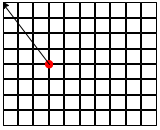
; computes the distance of ap to the origin (define (distance-to-0 ap) 0)
(check-expect (distance-to-0 (make-posn 0 5)) 5) (check-expect (distance-to-0 (make-posn 7 0)) 7)
(check-expect (distance-to-0 (make-posn 3 4)) 5) (check-expect (distance-to-0 (make-posn 8 6)) 10) (check-expect (distance-to-0 (make-posn 5 12)) 13)
Stop! Plug the x- and y-coordinates from the examples into the formula. Confirm the expected results for all five examples.
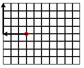 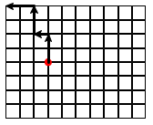
Stop! Does it matter which strategy you follow?
Design the function manhattan-distance, which measures the Manhattan distance of the given posn to the origin.
5.4 Defining Structure Types
Unlike numbers or Boolean values, structures such as posn usually don’t come with a programming language. Only the mechanism to define structure types is provided; the rest is left up to the programmer. This is also true for BSL.
(define-struct posn [x y])
(define-struct StructureName [FieldName ...])
one constructor, a function that creates structure instances. It takes as many values as there are fields; as mentioned, structure is short for structure instance. The phrase structure type is a generic name for the collection of all possible instances;
one selector per field, which extracts the value of the field from a structure instance; and
one structure predicate, which, like ordinary predicates, distinguishes instances from all other kinds of values.
Curiously, a structure type definition makes up names for the various new operations it creates. For the name of the constructor, it prefixes the structure name with “make-” and for the names of the selectors it postfixes the structure name with the field names. Finally, the predicate is just the structure name with “?” added, pronounced “huh” when read aloud.
This naming convention looks complicated and perhaps even confusing. But, with a little bit of practice, you’ll get the hang of it. It also explains the functions that come with posn structures: make-posn is the constructor, posn-x and posn-y are selectors. While we haven’t encountered posn? yet, we now know that it exists; the next chapter explains the role of these predicates in detail.
(define-struct movie [title producer year])
(define-struct person [name hair eyes phone])
(define-struct pet [name number])
(define-struct CD [artist title price])
(define-struct sweater [material size producer])
(define-struct entry [name phone email])
make-entry, which consumes three values and constructs an instance of entry;
entry-name, entry-phone, and entry-email, which consume one instance of entry and select one of the three field values; and
entry?, the predicate.
(make-entry "Al Abe" "666-7771" "[email protected]")
Exercise 66. Revisit the structure type definitions of exercise 65. Make sensible guesses as to what kind of values go with which fields. Then create at least one instance per structure type definition.
Every structure type definition introduces a new kind of structure, distinct from all others. Programmers want this kind of expressive power because they wish to convey an intention with the structure name. Wherever a structure is created, selected, or tested, the text of the program explicitly reminds the reader of this intention. If it weren’t for these future readers of code, programmers could use one structure definition for structures with one field, another for structures with two fields, a third for structures with three, and so on.
Sample Problem Develop a structure type definition for a program that deals with “bouncing balls,” briefly mentioned at the very beginning of this chapter. The ball’s location is a single number, namely the distance of pixels from the top. Its constant speed is the number of pixels it moves per clock tick. Its velocity is the speed plus the direction in which it moves.
A positive number means the ball moves down.
A negative number means it moves up.
(define-struct ball [location velocity])
Notice how, in principle, a ball structure merely combines two numbers, just like a posn structure. When a program contains the expression (ball-velocity a-ball), it immediately conveys that this program deals with the representation of a ball and its velocity. In contrast, if the program used posn structures instead, (posn-y a-ball) might mislead a reader of the code into thinking that the expression is about a y-coordinate.
(define SPEED 3) (define-struct balld [location direction]) (make-balld 10 "up")
Since structures are values, just like numbers or Booleans or strings, it makes sense that one instance of a structure occurs inside another instance. Consider game objects. Unlike bouncing balls, such objects don’t always move along vertical lines. Instead, they move in some “oblique” manner across the canvas. Describing both the location and the velocity of a ball moving across a 2-dimensional world canvas demands two numbers: one per direction.It is physics that tells you to add an object’s velocity to its location to obtain its next location. Developers need to learn whom to ask about which domain. For the location part, the two numbers represent the x- and y-coordinates. Velocity describes the changes in the horizontal and vertical direction; in other words, these “change numbers” must be added to the respective coordinates to find out where the object will be next.
(define-struct vel [deltax deltay])
(define-struct ballf [x y deltax deltay])
(define-struct centry [name home office cell]) (define-struct phone [area number]) (make-centry "Shriram Fisler" (make-phone 207 "363-2421") (make-phone 101 "776-1099") (make-phone 208 "112-9981"))
In sum, nesting information is natural. The best way to represent such information with data is to mirror the nesting with nested structure instances. Doing so makes it easy to interpret the data in the application domain of the program, and it is also straightforward to go from examples of information to data. Of course, it is really the task of data definitions to specify how to go back and forth between information and data. Before we study data definitions for structure type definitions, however, we first take a systematic look at computing with, and thinking about, structures.
5.5 Computing with Structures
Structure types generalize Cartesian points in two ways. First, a structure type may specify an arbitrary number of fields: zero, one, two, three, and so forth. Second, structure types name fields, they don’t number them.Most programming languages also support structure-like data that use numeric field names. This helps programmers read code because it is much easier to remember that a family name is available in a field called last-name than in the 7th field.
(define pl (make-entry "Al Abe" "666-7771" "[email protected]"))
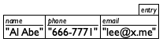
(make-entry "Tara Harp" "666-7770" "[email protected]")
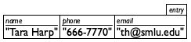
Not surprisingly, nested structure instances have a diagram of boxes nested in boxes. Thus, ball1 from above is equivalent to this diagram:
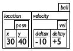
Exercise 69. Draw box representations for the solution of exercise 65.
> (entry-name pl) "Al Abe"
> (entry-name (make-posn 42 5)) entry-name:expects an entry, given (posn 42 5)
> (ball-velocity ball1) (make-vel -10 5)
> (vel-deltax (ball-velocity ball1)) -10
> (make-vel -10 5) (make-vel -10 5)
> (make-entry "Tara Harp" "666-7770" "[email protected]") (make-entry "Tara Harp" "666-7770" "[email protected]")
> (make-centry "Shriram Fisler" (make-phone 207 "363-2421") (make-phone 101 "776-1099") (make-phone 208 "112-9981")) (make-centry ...)
Generally speaking, a structure type definition not only creates new functions and new ways to create values, but it also adds new laws of computation to DrRacket’s knowledge. These laws generalize those for posn structures in Computing with posns, and they are best understood by example.
(define-struct ball [location velocity])
(ball-location (make-ball l0 v0))
==
l0
(ball-velocity (make-ball l0 v0))
==
v0
(define-struct vel [deltax deltay])
(vel-deltax (make-vel dx0 dy0))
==
dx0
(vel-deltay (make-vel dx0 dy0))
==
dy0
(vel-deltax (ball-velocity ball1)) == ; DrRacket replaces ball1 with its value (vel-deltax (ball-velocity (make-ball (make-posn 30 40) (make-vel -10 5)))) == ; DrRacket uses the law for ball-velocity (vel-deltax (make-vel -10 5)) == ; DrRacket uses the law for vel-deltax -10
(define-struct centry [name home office cell]) (define-struct phone [area number])
(phone-area (centry-office (make-centry "Shriram Fisler" (make-phone 207 "363-2421") (make-phone 101 "776-1099") (make-phone 208 "112-9981"))))
(define ap (make-posn 7 0)) (define pl (make-entry "Al Abe" "666-7771" "[email protected]"))
> (entry? pl) #true
> (entry? 42) #false
> (entry? #true) #false
; distances in terms of pixels: (define HEIGHT 200) (define MIDDLE (quotient HEIGHT 2)) (define WIDTH 400) (define CENTER (quotient WIDTH 2)) (define-struct game [left-player right-player ball]) (define game0 (make-game MIDDLE MIDDLE (make-posn CENTER CENTER)))
(game-ball game0) (posn? (game-ball game0)) (game-left-player game0)
5.6 Programming with Structures
(define-struct posn [x y]) ; A Posn is a structure: ; (make-posn Number Number) ; interpretation a point x pixels from left, y from top
(define-struct entry [name phone email]) ; An Entry is a structure: ; (make-entry String String String) ; interpretation a contact's name, phone#, and email
(define-struct ball [location velocity]) ; A Ball-1d is a structure: ; (make-ball Number Number) ; interpretation 1 distance to top and velocity ; interpretation 2 distance to left and velocity
; A Ball-2d is a structure: ; (make-ball Posn Vel) ; interpretation a 2-dimensional position and velocity (define-struct vel [deltax deltay]) ; A Vel is a structure: ; (make-vel Number Number) ; interpretation (make-vel dx dy) means a velocity of ; dx pixels [per tick] along the horizontal and ; dy pixels [per tick] along the vertical direction
Here we name a second collection of data, Ball-2d, distinct from Ball-1d, to describe data representations for balls that move in straight lines across a world canvas. In short, it is possible to use one and the same structure type in two different ways. Of course, within one program, it is best to stick to one and only one use; otherwise you are setting yourself up for problems.
Also, Ball-2d refers to another one of our data definitions, namely, the one for Vel. While all other data definitions have thus far referred to built-in data collections (Number, Boolean, String), it is perfectly acceptable, and indeed common, that one of your data definitions refers to another.
Exercise 72. Formulate a data definition for the above phone structure type definition that accommodates the given examples.
(define-struct phone# [area switch num])
At this point, you might be wondering what data definitions really mean. This question, and its answer, is the topic of the next section. For now, we indicate how to use data definitions for program design.
Sample Problem Your team is designing an interactive game program that moves a red dot across acanvas and allows players to use the mouse to reset the dot. Here is how far you got together:
(define MTS (empty-scene 100 100)) (define DOT (circle 3 "solid" "red")) ; A Posn represents the state of the world. ; Posn -> Posn (define (main p0) (big-bang p0 [on-tick x+] [on-mouse reset-dot] [to-draw scene+dot])) Your task is to design scene+dot, the function that adds a red dot to the empty canvas at the specified position.
(check-expect (scene+dot (make-posn 10 20)) (place-image DOT 10 20 MTS)) (check-expect (scene+dot (make-posn 88 73)) (place-image DOT 88 73 MTS))
(define (scene+dot p) (place-image DOT (posn-x p) (posn-y p) MTS))
Sample Problem A colleague is asked to define x+, a function that consumes a Posn and increases the x-coordinate by 3.
; Posn -> Posn ; increases the x-coordinate of p by 3 (check-expect (x+ (make-posn 10 0)) (make-posn 13 0)) (define (x+ p) (... (posn-x p) ... (posn-y p) ...))
Exercise 73. Design the function posn-up-x, which consumes a Posn p and a Number n. It produces a Posn like p with n in the x field.
Sample Problem Another colleague is tasked to design reset-dot, a function that resets the dot when the mouse is clicked.
; Posn Number Number MouseEvt -> Posn ; for mouse clicks, (make-posn x y); otherwise p (define (reset-dot p x y me) p)
(check-expect (reset-dot (make-posn 10 20) 29 31 "button-down") (make-posn 29 31)) (check-expect (reset-dot (make-posn 10 20) 29 31 "button-up") (make-posn 10 20))
(define (reset-dot p x y me) (cond [(mouse=? "button-down" me) (... p ... x y ...)] [else (... p ... x y ...)]))
Exercise 74. Copy all relevant constant and function definitions to DrRacket’s definitions area. Add the tests and make sure they pass. Then run the program and use the mouse to place the red dot.
Sample Problem Your team is designing a game program that keeps track of an object that moves across the canvas at changing speed. The chosen data representation requires two data definitions:Remember, it’s about physics.
(define-struct ufo [loc vel]) ; A UFO is a structure: ; (make-ufo Posn Vel) ; interpretation (make-ufo p v) is at location ; p moving at velocity v It is your task to develop ufo-move-1. The function computes the location of a given UFO after one clock tick passes.
(define v1 (make-vel 8 -3)) (define v2 (make-vel -5 -3)) The order of these definitions matters. See Intermezzo 1: Beginning Student Language. (define p1 (make-posn 22 80)) (define p2 (make-posn 30 77)) (define u1 (make-ufo p1 v1)) (define u2 (make-ufo p1 v2)) (define u3 (make-ufo p2 v1)) (define u4 (make-ufo p2 v2))
; UFO -> UFO ; determines where u moves in one clock tick; ; leaves the velocity as is (check-expect (ufo-move-1 u1) u3) (check-expect (ufo-move-1 u2) (make-ufo (make-posn 17 77) v2)) (define (ufo-move-1 u) u)
; UFO -> UFO (define (ufo-move-1 u) (... (posn-x (ufo-loc u)) ... ... (posn-y (ufo-loc u)) ... ... (vel-deltax (ufo-vel u)) ... ... (vel-deltay (ufo-vel u)) ...))
If a function deals with nested structures, develop one function per level of nesting.
(define (ufo-move-1 u) (make-ufo (posn+ (ufo-loc u) (ufo-vel u)) (ufo-vel u)))
(check-expect (posn+ p1 v1) p2) (check-expect (posn+ p1 v2) (make-posn 17 77))
Exercise 75. Enter these definitions and their test cases into the definitions area of DrRacket and make sure they work. This is the first time that you have dealt with a “wish,” and you need to make sure you understand how the two functions work together.
5.7 The Universe of Data
Every language comes with a universe of data. This data represents information from and about the external world; it is what programs manipulate. This universe of data is a collection that not only containsRemember that mathematicians call data collections or data classes sets. all built-in data but also any piece of data that any program may ever create.
The left side of figure 30 shows one way to imagine the universe of BSL. Since there are infinitely many numbers and strings, the collection of all data is infinite. We indicate “infinity” in the figure with “...”, but a real definition would have to avoid this imprecision.
Neither programs nor individual functions in programs deal with the entire universe of data. It is the purpose of a data definition to describe parts of this universe and to name these parts so that we can refer to them concisely. Put differently, a named data definition is a description of a collection of data, and that name is usable in other data definitions and in function signatures. In a function signature, the name specifies what data a function will deal with and, implicitly, which part of the universe of data it won’t deal with.
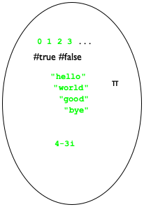 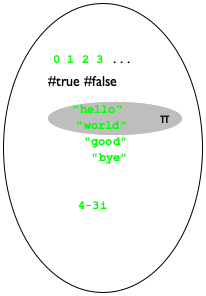
; A BS is one of: ; — "hello", ; — "world", or ; — pi.
The definition of structure types completely revised the picture. When a programmer defines a structure type, the universe expands with all possible structure instances. For example, the addition of posn means that instances of posn with all possible values in the two fields appear. The middle bubble in figure 31 depicts the addition of these values, including such seeming nonsense as (make-posn "hello" 0) and (make-posn (make-posn 0 1) 2). And yes, some of these instances of posn make no sense to us. But, a BSL program may construct any of them.
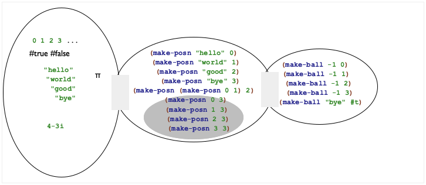
(define-struct ball [location velocity])
(define-struct movie [title producer year])
(define-struct person [name hair eyes phone])
(define-struct pet [name number])
(define-struct CD [artist title price])
(define-struct sweater [material size producer])
Exercise 77. Provide a structure type definition and a data definition for representing points in time since midnight. A point in time consists of three numbers: hours, minutes, and seconds.
Exercise 78. Provide a structure type and a data definition for representing three-letter words. A word consists of lowercase letters, represented with the 1Strings "a" through "z" plus #false. Note This exercise is a part of the design of a hangman game; see exercise 396.
Programmers not only write data definitions, they also read them in order to understand programs, to expand the kind of data they can deal with, to eliminate errors, and so on. We read a data definition to understand how to create data that belongs to the designated collection and to determine whether some piece of data belongs to some specified class.
for a built-in collection of data (number, string, Boolean, images), choose your favorite examples;
Note On occasion, people use descriptive names to qualify built-in data collections, such as NegativeNumber or OneLetterString. They are no replacement for a well-written data definition. End
for an enumeration, use several of the items of the enumeration;
for intervals, use the end points (if they are included) and at least one interior point;
for itemizations, deal with each part separately; and
for data definitions for structures, follow the natural language description; that is, use the constructor and pick an example from the data collection named for each field.
; A Color is one of: ; — "white" ; — "yellow" ; — "orange" ; — "green" ; — "red" ; — "blue" ; — "black" Note DrRacket recognizes many more strings as colors. End
; H is a Number between 0 and 100. ; interpretation represents a happiness value (define-struct person [fstname lstname male?]) ; A Person is a structure: ; (make-person String String Boolean) Is it a good idea to use a field name that looks like the name of a predicate?(define-struct dog [owner name age happiness]) ; A Dog is a structure: ; (make-dog Person String PositiveInteger H) Add an interpretation to this data definition, too.
; A Weapon is one of: ; — #false ; — Posn ; interpretation #false means the missile hasn't ; been fired yet; a Posn means it is in flight
5.8 Designing with Structures
The introduction of structure types reinforces the need for all six steps in the design recipe. It no longer suffices to rely on built-in data collections to represent information; it is now clear that programmers must create data definitions for all but the simplest problems.
Sample Problem Design a function that computes the distance of objects in a 3-dimensional space to the origin.
When a problem calls for the representation of pieces of information that belong together or describe a natural whole, you need a structure type definition. It requires as many fields as there are relevant properties. An instance of this structure type corresponds to the whole, and the values in the fields correspond to its attributes.
A data definition for a structure type introduces a name for the collection of instances that are legitimate. Furthermore, it must describe which kind of data goes with which field. Use only names of built-in data collections or previously defined data definitions.
In the end, we (and others) must be able to use the data definition to create sample structure instances. Otherwise, something is wrong with our data definition. To ensure that we can create instances, our data definitions should come with data examples.
Here is how we apply this idea to the sample problem:(define-struct r3 [x y z]) ; An R3 is a structure: ; (make-r3 Number Number Number) (define ex1 (make-r3 1 2 13)) (define ex2 (make-r3 -1 0 3)) The structure type definition introduces a new kind of structure, r3, and the data definition introduces R3 as the name for all instances of r3 that contain only numbers.You still need a signature, a purpose statement, and a function header but they remain the same. Stop! Do it for the sample problem.
Use the examples from the first step to create functional examples. For each field associated with intervals or enumerations, make sure to pick end points and intermediate points to create functional examples. We expect you to continue working on the sample problem.
A function that consumes structures usually—
though not always— extracts the values from the various fields in the structure. To remind yourself of this possibility, add a selector for each field to the templates for such functions. ; R3 -> Number ; determines the distance of p to the origin (define (r3-distance-to-0 p) (... (r3-x p) ... (r3-y p) ... (r3-z p) ...)) You may want to write down next to each selector expression what kind of data it extracts from the given structure; you can find this information in the data definition. Stop! Just do it!Use the selector expressions from the template when you define the function. Keep in mind that you may not need some of them.
Test. Test as soon as the function header is written. Test until all expressions have been covered. Test again when you make changes.
(define-struct movie [title director year])
(define-struct pet [name number])
(define-struct CD [artist title price])
(define-struct sweater [material size color])
Exercise 81. Design the function time->seconds, which consumes instances of time structures (see exercise 77) and produces the number of seconds that have passed since midnight. For example, if you are representing 12 hours, 30 minutes, and 2 seconds with one of these structures and if you then apply time->seconds to this instance, the correct result is 45002.
Exercise 82. Design the function compare-word. The function consumes two three-letter words (see exercise 78). It produces a word that indicates where the given ones agree and disagree. The function retains the content of the structure fields if the two agree; otherwise it places #false in the field of the resulting word. Hint The exercises mentions two tasks: the comparison of words and the comparison of “letters.”
5.9 Structure in the World
When a world program must track two independent pieces of information, we must use a collection of structures to represent the world state data. One field keeps track of one piece of information and the other field the second piece of information. Naturally, if the domain world contains more than two independent pieces of information, the structure type definition must specify as many fields as there are distinct pieces of information.
(define-struct space-game [ufo tank])
Every time we say “piece of information,” we don’t necessarily mean a single number or a single word. A piece of information may itself combine several pieces of information. Creating a data representation for that kind of information naturally leads to nested structures.
; A SpaceGame is a structure: ; (make-space-game Posn Number). ; interpretation (make-space-game (make-posn ux uy) tx) ; describes a configuration where the UFO is ; at (ux,uy) and the tank's x-coordinate is tx
Understanding what kind of data representations are needed for world programs takes practice. The following two sections introduce several reasonably complex problem statements. Solve them before moving on to the kind of games that you might like to design on your own.
5.10 A Graphical Editor
To program in BSL, you open DrRacket, type on the keyboard, and watch text
appear. Pressing the left arrow on the keyboard moves the cursor to the
left; pressing the backspace (or delete) key erases a single letter to the
left of the cursor—
This process is called “editing,” though its precise name should be “text editing of programs” because we will use “editing” for a more demanding task than typing on a keyboard. When you write and revise other kinds of documents, say, an English assignment, you are likely to use other software applications, called word processors, though computer scientists dub all of them editors or even graphical editors.
You are now in a position to design a world program that acts as a one-line editor for plain text. Editing here includes entering letters and somehow changing the already existing text, including the deletion and the insertion of letters. This implies some notion of position within the text. People call this position a cursor; most graphical editors display it in such a way that it can easily be spotted.
Take a look at the following editor configuration:
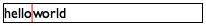
Someone might have entered the text “helloworld” and hit the left arrow key five times, causing the cursor to move from the end of the text to the position between “o” and “w.” Pressing the space bar would now cause the editor to change its display as follows:
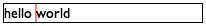
the text entered so far, and
the current location of the cursor.
(define-struct editor [pre post]) ; An Editor is a structure: ; (make-editor String String) ; interpretation (make-editor s t) describes an editor ; whose visible text is (string-append s t) with ; the cursor displayed between s and t
Exercise 83. Design the function render, which consumes an Editor and produces an image.
The purpose of the function is to render the text within an empty scene of
 pixels. For the cursor, use a red rectangle and for the
strings, black text of size 16.
pixels. For the cursor, use a red rectangle and for the
strings, black text of size 16.
(overlay/align "left" "center" (text "hello world" 11 "black") (empty-scene 200 20))
Exercise 84. Design edit. The function consumes two inputs, an editor ed and a KeyEvent ke, and it produces another editor. Its task is to add a single-character KeyEvent ke to the end of the pre field of ed, unless ke denotes the backspace ("\b") key. In that case, it deletes the character immediately to the left of the cursor (if there are any). The function ignores the tab key ("\t") and the return key ("\r").
The function pays attention to only two KeyEvents longer than one letter: "left" and "right". The left arrow moves the cursor one character to the left (if any), and the right arrow moves it one character to the right (if any). All other such KeyEvents are ignored.
Develop a goodly number of examples for edit, paying attention to special cases. When we solved this exercise, we created 20 examples and turned all of them into tests.
Hint Think of this function as consuming KeyEvents, a collection that is specified as an enumeration. It uses auxiliary functions to deal with the Editor structure. Keep a wish list handy; you will need to design additional functions for most of these auxiliary functions, such as string-first, string-rest, string-last, and string-remove-last. If you haven’t done so, solve the exercises in Functions.
Exercise 85. Define the function run. Given the pre field of an editor, it launches an interactive editor, using render and edit from the preceding two exercises for the to-draw and on-key clauses, respectively.
Exercise 86. Notice that if you type a lot, your editor program does not display all of the text. Instead the text is cut off at the right margin. Modify your function edit from exercise 84 so that it ignores a keystroke if adding it to the end of the pre field would mean the rendered text is too wide for your canvas.
Exercise 87. Develop a data representation for an editor based on our first idea, using a string and an index. Then solve the preceding exercises again. Retrace the design recipe. Hint if you haven’t done so, solve the exercises in Functions.
Note on Design Choices The exercise is a first study of making design choices. It shows that the very first design choice concerns the data representation. Making the right choice requires planning ahead and weighing the complexity of each. Of course, getting good at this is a question of gaining experience.
5.11 More Virtual Pets
In this section we continue our virtual zoo project from Virtual Pet Worlds. Specifically, the goal of the exercise is to combine the cat world program with the program for managing its happiness gauge. When the combined program runs, you see the cat walking across the canvas, and, with each step, its happiness goes down. The only way to make the cat happy is to feed it (down arrow) or to pet it (up arrow). Finally, the goal of the last exercise in this section is to create another virtual, happy pet.
Exercise 88. Define a structure type that keeps track of the cat’s x-coordinate and its happiness. Then formulate a data definition for cats, dubbed VCat, including an interpretation.
Exercise 89. Design the happy-cat world program, which manages a walking cat and its happiness level. Let’s assume that the cat starts out with perfect happiness.
Hints (1) Reuse the functions from the world programs in Virtual Pet Worlds. (2) Use structure type from the preceding exercise to represent the state of the world.
Exercise 90. Modify the happy-cat program from the preceding exercises so that it stops whenever the cat’s happiness falls to 0.
Exercise 91. Extend your structure type definition and data definition from exercise 88 to include a direction field. Adjust your happy-cat program so that the cat moves in the specified direction. The program should move the cat in the current direction, and it should turn the cat around when it reaches either end of the scene.
(define cham
)
The above drawing of a chameleon is a transparent image. To insert it into DrRacket, insert it with the “Insert Image” menu item. Using this instruction preserves the transparency of the drawing’s pixels.
When a partly transparent image is combined with a colored shape, say a rectangle, the image takes on the underlying color. In the chameleon drawing, it is actually the inside of the animal that is transparent; the area outside is solid white. Try out this expression in your DrRacket:
(define background (rectangle (image-width cham) (image-height cham) "solid" "red")) (overlay cham background)
Exercise 92. Design the cham program, which has the chameleon continuously walking across the canvas from left to right. When it reaches the right end of the canvas, it disappears and immediately reappears on the left. Like the cat, the chameleon gets hungry from all the walking, and, as time passes by, this hunger expresses itself as unhappiness.
For managing the chameleon’s happiness gauge, you may reuse the happiness gauge from the virtual cat. To make the chameleon happy, you feed it (down arrow, two points only); petting isn’t allowed. Of course, like all chameleons, ours can change color, too: "r" turns it red, "b" blue, and "g" green. Add the chameleon world program to the virtual cat game and reuse functions from the latter when possible.
Start with a data definition, VCham, for representing chameleons.
(define BACKGROUND (beside (empty-scene WIDTH HEIGHT "green") Have some Italian pizza when you’re done. (empty-scene WIDTH HEIGHT "white") (empty-scene WIDTH HEIGHT "red")))
Note When you watch the animation carefully, you see the chameleon riding on a white rectangle. If you know how to use image editing software, modify the picture so that the white rectangle is invisible. Then the chameleon will really blend in.
6 Itemizations and Structures
The preceding two chapters introduce two ways of formulating data definitions. Those that employ itemization (enumeration and intervals) are used to create small collections from large ones. Those that use structures combine multiple collections. Since the development of data representations is the starting point for proper program design, it cannot surprise you that programmers frequently want to itemize data definitions that involve structures or to use structures to combine itemized data.
the state of the world is a structure with two fields, or
the state of the world is a structure with three fields.
This chapter introduces the basic idea of itemizing data definitions that involve structures. Because we have all the other ingredients we need, we start straight with itemizing structures. After that, we discuss some examples, including world programs that benefit from our new power. The last section is about errors in programming.
6.1 Designing with Itemizations, Again
Let’s start with a refined problem statement for our space invader game from Programming with Structures.
Sample Problem Design a game program using the 2htdp/universe library for playing a simple space invader game. The player is in control of a tank (a small rectangle) that must defend our planet (the bottom of the canvas) from a UFO (see Intervals for one possibility) that descends from the top of the canvas to the bottom. In order to stop the UFO from landing, the player may fire a single missile (a triangle smaller than the tank) by hitting the space bar. In response, the missile emerges from the tank. If the UFO collides with the missile, the player wins; otherwise the UFO lands and the player loses.
Here are some details concerning the three game objects and their movements. First, the tank moves a constant speed along the bottom of the canvas, though the player may use the left arrow key and the right arrow key to change directions. Second, the UFO descends at a constant velocity but makes small random jumps to the left or right. Third, once fired, the missile ascends along a straight vertical line at a constant speed at least twice as fast as the UFO descends. Finally, the UFO and the missile collide if their reference points are close enough, for whatever you think “close enough” means.
The following two subsections use this sample problem as a running example, so study it well and solve the following exercise before you continue. Doing so will help you understand the problem in enough depth.
Exercise 94. Draw some sketches of what the game scenery looks like at various stages. Use the sketches to determine the constant and the variable pieces of the game. For the former, develop physical and graphical constants that describe the dimensions of the world (canvas) and its objects. Also develop some background scenery. Finally, create your initial scene from the constants for the tank, the UFO, and the background.
Defining Itemizations The first step in our design recipe calls for the development of data definitions. One purpose of a data definition is to describe the construction of data that represents the state of the world; another is to describe all possible pieces of data that the event-handing functions of the world program may consume. Since we haven’t seen itemizations that include structures, this first subsection introduces this idea. While this probably won’t surprise you, pay close attention.
For this space invader game, we could get away with one structure type definition of three fields where the third field contains #false until the missile is fired, and a Posn for the missile’s coordinates thereafter. See below.
(define-struct aim [ufo tank]) (define-struct fired [ufo tank missile])
; A UFO is a Posn. ; interpretation (make-posn x y) is the UFO's location ; (using the top-down, left-to-right convention) (define-struct tank [loc vel]) ; A Tank is a structure: ; (make-tank Number Number). ; interpretation (make-tank x dx) specifies the position: ; (x, HEIGHT) and the tank's speed: dx pixels/tick ; A Missile is a Posn. ; interpretation (make-posn x y) is the missile's place
; A SIGS is one of: ; – (make-aim UFO Tank) ; – (make-fired UFO Tank Missile) ; interpretation represents the complete state of a ; space invader game
- Here is an instance that describes the tank maneuvering into position to fire the missile:
(make-aim (make-posn 20 10) (make-tank 28 -3))
- This one is just like the previous one but the missile has been fired:Of course, the capitalized names refer to the physical constants that you defined.
- Finally, here is one where the missile is about to collide with the UFO:This example assumes that the canvas is more than 100 pixels tall.
Exercise 95. Explain why the three instances are generated according to the first or second clause of the data definition.
Exercise 96. Sketch how each of the three game states could be rendered assuming a canvas.
The Design Recipe With a new way of formulating data definitions comes an inspection of the design recipe. This chapter introduces a way to combine two or more means of describing data, and the revised design recipe reflects this, especially the first step:
When do you need this new way of defining data? You already know that the need for itemizations is due to distinctions among different classes of information in the problem statement. Similarly, the need for structure-based data definitions is due to the demand to group several different pieces of information.
An itemization of different forms of data—
including collections of structures— is required when your problem statement distinguishes different kinds of information and when at least some of these pieces of information consist of several different pieces. One thing to keep in mind is that data definitions may refer to other data definitions. Hence, if a particular clause in a data definition looks overly complex, it is acceptable to write down a separate data definition for this clause and refer to this auxiliary definition.
And, as always, formulate data examples using the data definitions.
The second step remains the same. Formulate a function signature that mentions only the names of defined or built-in data collections, add a purpose statement, and create a function header.
Nothing changes for the third step. You still need to formulate functional examples that illustrate the purpose statement from the second step, and you still need one example per item in the itemization.
The development of the template now exploits two different dimensions: the itemization itself and the use of structures in its clauses.
By the first, the body of the template consists of a cond expression that has as many cond clauses as the itemizations has items. Furthermore, you must add a condition to each cond clause that identifies the sub-class of data in the corresponding item.
By the second, if an item deals with a structure, the template contains the selector expressions—
in the cond clause that deals with the sub-class of data described in the item. When you choose to describe the data with a separate data definition, however, you do not add selector expressions. Instead, you create a template for the separate data definition to the task at hand and refer to that template with a function call. The latter indicates that this sub-class of data is being processed separately.
Before going through the work of developing a template, briefly reflect on the nature of the function. If the problem statement suggests that there are several tasks to be performed, it is likely that a composition of several, separately designed functions is needed instead of a template. In that case, skip the template step.
Fill the gaps in the template. The more complex you make your data definitions, the more complex this step becomes. The good news is that this design recipe can help in many situations.
If you are stuck, fill the easy cases first and use default values for the others. While this makes some of the test cases fail, you are making progress and you can visualize this progress.
If you are stuck on some cases of the itemization, analyze the examples that correspond to those cases. Determine what the pieces of the template compute from the given inputs. Then consider how to combine these pieces (plus some constants) to compute the desired output. Keep in mind that you might need an auxiliary function.
Also, if your template “calls” another template because the data definitions refer to each other, assume that the other function delivers what its purpose statement and its examples promise—
even if this other function’s definition isn’t finished yet. Test. If tests fail, determine what’s wrong: the function, the tests, or both. Go back to the appropriate step.
Let’s illustrate the design recipe with the design of a rendering function for the sample problem at the beginning of this section. Recall that a big-bang expression needs such a rendering function to turn the state of the world into an image after every clock tick, mouse click, or keystroke.
; SIGS -> Image ; adds TANK, UFO, and possibly MISSILE to ; the BACKGROUND scene (define (si-render s) BACKGROUND)
s
(si-render s)
(make-aim (make-posn 10 20) (make-tank 28 -3))
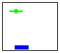
(make-fired (make-posn 20 100) (make-tank 100 3) (make-posn 22 103))
(make-fired (make-posn 10 20) (make-tank 28 -3) (make-posn 32 (- HEIGHT TANK-HEIGHT 10)))
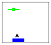

Since the itemization in the data definition consists of two items, let’s make three examples, using the data examples from above. See figure 32. Unlike the function tables found in mathematics books, this table is rendered vertically. The left column contains sample inputs for our desired function; the right column lists the corresponding desired results. As you can see, we used the data examples from the first step of the design recipe, and they cover both items of the itemization.
(define (si-render s) (cond [(aim? s) (... (aim-tank s) ... (aim-ufo s) ...)] [(fired? s) (... (fired-tank s) ... (fired-ufo s) ... (fired-missile s) ...)]))
The template contains nearly everything we need to finish our task. To complete the definition, we figure out for each cond line how to combine the values we have in order to compute the expected result. Beyond the pieces of the input, we may also use globally defined constants, for example, BACKGROUND, which is obviously of help here; primitive or built-in operations; and, if all else fails, wish-list functions, that is, we describe functions we wish we had.
... (tank-render (aim-tank s) (ufo-render (aim-ufo s) BACKGROUND))
; Tank Image -> Image ; adds t to the given image im (define (tank-render t im) im) ; UFO Image -> Image ; adds u to the given image im (define (ufo-render u im) im)
; SIGS -> Image ; renders the given game state on top of BACKGROUND ; for examples see figure 32 (define (si-render s) (cond [(aim? s) (tank-render (aim-tank s) (ufo-render (aim-ufo s) BACKGROUND))] [(fired? s) (tank-render (fired-tank s) (ufo-render (fired-ufo s) (missile-render (fired-missile s) BACKGROUND)))]))
(tank-render (fired-tank s) (ufo-render (fired-ufo s) (missile-render (fired-missile s) BACKGROUND)))
(ufo-render (fired-ufo s) (tank-render (fired-tank s) (missile-render (fired-missile s) BACKGROUND)))
Exercise 98. Design the function si-game-over? for use as the stop-when handler. The game stops if the UFO lands or if the missile hits the UFO. For both conditions, we recommend that you check for proximity of one object to another.
The stop-when clause allows for an optional second sub-expression, namely a function that renders the final state of the game. Design si-render-final and use it as the second part for your stop-when clause in the main function of exercise 100.
Exercise 99. Design si-move. This function is called for every clock tick to determine to which position the objects move now. Accordingly, it consumes an element of SIGS and produces another one.
Moving the tank and the missile (if any) is relatively straightforward. They move in straight lines at a constant speed. Moving the UFO calls for small random jumps to the left or the right. Since you have never dealt with functions that create random numbers, the rest of this exercise is a longish hint on how to deal with this issue.
; Number -> Number ; produces a number in the interval [0,n), ; possibly a different one each time it is called (define (random n) ...)
(define (si-move w) (si-move-proper w (random ...))) ; SIGS Number -> SIGS ; moves the space-invader objects predictably by delta (define (si-move-proper w delta) w)
Instead of calling random directly, you may wish to design a function that creates a random x-coordinate for the UFO. Consider using check-random from BSL’s testing framework to test such a function.
pressing the left arrow ensures that the tank moves left;
pressing the right arrow ensures that the tank moves right; and
pressing the space bar fires the missile if it hasn’t been launched yet.
Once you have this function, you can define the si-main function, which uses big-bang to spawn the game-playing window. Enjoy!
; SIGS.v2 -> Image ; renders the given game state on top of BACKGROUND (define (si-render.v2 s) (tank-render (sigs-tank s) (ufo-render (sigs-ufo s) (missile-render.v2 (sigs-missile s) BACKGROUND))))
(define-struct sigs [ufo tank missile]) ; A SIGS.v2 (short for SIGS version 2) is a structure: ; (make-sigs UFO Tank MissileOrNot) ; interpretation represents the complete state of a ; space invader game ; A MissileOrNot is one of: ; – #false ; – Posn ; interpretation#false means the missile is in the tank; ; Posn says the missile is at that location
As a result, the functions for this second data representation of states differ from the functions for the first one. In particular, functions that consume an element of SIGS.v2 do not use a cond expression because there is only one kind of element in the collection. In terms of design approach, the design recipe for structures from Designing with Structures suffices. Figure 34 shows the result of designing the rendering function for this data representation.
; MissileOrNot Image -> Image ; adds an image of missile m to scene s (define (missile-render.v2 m s) s)
As for examples, we must consider at least two cases: one when m is #false and another one when m is a Posn. In the first case, the missile hasn’t been fired, which means that no image of a missile is to be added to the given scene. In the second case, the missile’s position is specified and that is where the image of the missile must show up. Figure 35 demonstrates the workings of the function with two distinct scenarios.
m
(missile-render.v2 m s)
#false
(make-posn 32 (- HEIGHT TANK-HEIGHT 10))

Exercise 101. Turn the examples in figure 35 into test cases.
(define (missile-render.v2 m s) (cond [(boolean? m) ...] [(posn? m) (... (posn-x m) ... (posn-y m) ...)]))
(define (missile-render.v2 m s) (cond [(boolean? m) s] [(posn? m) (place-image MISSILE (posn-x m) (posn-y m) s)]))
Exercise 102. Design all other functions that are needed to complete the game for this second data definition.
spiders, whose relevant attributes are the number of remaining legs (we assume that spiders can lose legs in accidents) and the space they need in case of transport;
elephants, whose only attributes are the space they need in case of transport;
boa constrictors, whose attributes include length and girth; and
armadillos, for which you must determine appropriate attributes, including one that determines the space needed for transport.
Design the fits? function, which consumes a zoo animal and a description of a cage. It determines whether the cage’s volume is large enough for the animal.
Exercise 104. Your home town manages a fleet of vehicles: automobiles, vans, buses, and SUVs. Develop a data representation for vehicles. The representation of each vehicle must describe the number of passengers that it can carry, its license plate number, and its fuel consumption (miles per gallon). Develop a template for functions that consume vehicles.
; A Coordinate is one of: ; – a NegativeNumber ; interpretation on the y axis, distance from top ; – a PositiveNumber ; interpretation on the x axis, distance from left ; – a Posn ; interpretation an ordinary Cartesian point
6.2 Mixing Up Worlds
This section suggests several design problems for world program, starting with simple extension exercises concerning our virtual pets.
Exercise 106. In More Virtual Pets we discussed the creation of virtual pets that come with happiness gauges. One of the virtual pets is a cat; the other one, a chameleon. Each program is dedicated to a single pet, however.
Exercise 107. Design the cham-and-cat program, which deals with both a virtual cat and a virtual chameleon. You need a data definition for a “zoo” containing both animals and functions for dealing with it.
Each key event goes to both animals.
Each key event applies to only one of the two animals.
For this alternative, you need a data representation that specifies a focus animal, that is, the animal that can currently be manipulated. To switch focus, have the key-handling function interpret "k" for “kitty” and "l" for lizard. Once a player hits "k", the following keystrokes apply to the cat only—
until the player hits "l".
Exercise 108. In its default state, a pedestrian crossing light shows an orange person standing on a red background. When it is time to allow the pedestrian to cross the street, the light receives a signal and switches to a green, walking person. This phase lasts for 10 seconds. After that the light displays the digits 9, 8, ..., 0 with odd numbers colored orange and even numbers colored green. When the countdown reaches 0, the light switches back to its default state.
Exercise 109. Design a world program that recognizes a pattern in a sequence of KeyEvents. Initially the program shows a 100 by 100 white rectangle. Once your program has encountered the first desired letter, it displays a yellow rectangle of the same size. After encountering the final letter, the color of the rectangle turns green. If any “bad” key event occurs, the program displays a red rectangle.
conventional
defined abbreviations
; ExpectsToSee.v1 is one of: ; – "start, expect an 'a'" ; – "expect 'b', 'c', or 'd'" ; – "finished" ; – "error, illegal key"
; ExpectsToSee.v2 is one of: ; – AA ; – BB ; – DD ; – ER (define AA "start, ...") (define BB "expect ...") (define DD "finished") (define ER "error, ...")
The specific sequences that your program looks for start with "a", followed by an arbitrarily long mix of "b" and "c", and ended by a "d". Clearly, "acbd" is one example of an acceptable string; two others are "ad" and "abcbbbcd". Of course, "da", "aa", or "d" do not match.
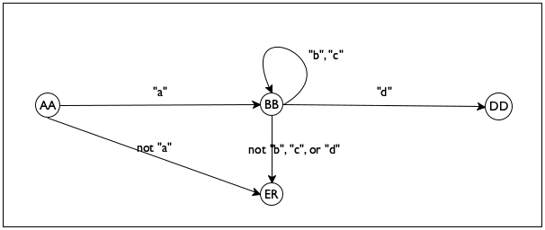
Hint Your solution implements a finite state machine (FSM), an idea introduced in Finite State Worlds as one design principle behind world programs. As the name says, an FSM program may be in one of a finite number of states. The first state is called an initial state. Each key event causes the machine to reconsider its current state; it may transition to the same state or to another one. When your program recognizes a proper sequence of key events, it transitions to a final state.
For a sequence-recognition problem, states typically represent the letters that the machine expects to see next; see figure 36 for a data definition.The data definition on the right uses the naming technique introduced in exercise 61. Take a look at the last state, which says an illegal input has been encountered. Figure 37 shows how to think of these states and their relationships in a diagrammatic manner. Each node corresponds to one of the four finite states; each arrow specifies which KeyEvent causes the program to transition from one state to another.
a (b|c)* d
6.3 Input Errors
One central point of this chapter concerns the role of predicates. They are critical when you must design functions that process mixes of data. Such mixes come up naturally when your problem statement mentions many different kinds of information, but they also come up when you hand your functions and programs to others. After all, you know and respect your data definitions and function signatures. You never know, however, what your friends and colleagues do, and youIt is a form of self-delusion to expect that we always respect our own function signatures. Calling a function on the wrong kind of data happens to the best of us. While many languages are like BSL and expect programmers to check signatures on their own, others do so automatically at the cost of some additional complexity. especially don’t know how someone without knowledge of BSL and programming uses your programs. This section therefore presents one way of protecting programs from inappropriate inputs.
; Number -> Number ; computes the area of a disk with radius r (define (area-of-disk r) (* 3.14 (* r r)))
> (area-of-disk "my-disk") *:expects a number as 1st argument, given "my-disk"
; Any BSL value is one of: ; – Number ; – Boolean ; – String ; – Image ; – (make-posn Any Any) ; ... ; – (make-tank Any Any) ; ...
Specifically, we can define checked versions of our functions, when we wish
to hand them to our friends. Because our friends may not know much BSL,
we must expect that they
apply this checked function to arbitrary BSL values: numbers,
strings, images, Posns, and so on. Although we
cannot anticipate which structure types will be defined in BSL, we know
the rough shape of the data definition for the collection of all BSL
values. Figure 38 displays this shape of this data
definition. As discussed in The Universe of Data, the data definition for Any is
open-ended because every structure type definition adds new
instances. These instances may contain Any values again, which
implies that the data definition of Any must
refer to itself—
; Any -> ??? (define (checked-f v) (cond [(number? v) ...] [(boolean? v) ...] [(string? v) ...] [(image? v) ...] [(posn? v) (...(posn-x v) ... (posn-y v) ...)] ... ; which selectors are needed in the next clause? [(tank? v) ...] ...))
(error "area-of-disk: number expected")
(define MESSAGE "area-of-disk: number expected") (define (checked-area-of-disk v) (cond [(number? v) (area-of-disk v)] [(boolean? v) (error MESSAGE)] [(string? v) (error MESSAGE)] [(image? v) (error MESSAGE)] [(posn? v) (error MESSAGE)] ... [(tank? v) (error MESSAGE)] ...))
; Any -> Number ; computes the area of a disk with radius v, ; if v is a number (define (checked-area-of-disk v) (cond [(number? v) (area-of-disk v)] [else (error "area-of-disk: number expected")]))
> (checked-area-of-disk "my-disk") area-of-disk:number expected
Writing checked functions is important if we distribute our programs for others to use. Designing programs that work properly, however, is far more important. This book focuses on the design process for proper program design, and, to do this without distraction, we agree that we always adhere to data definitions and signatures. At least, we almost always do so, and on rare occasions we may ask you to design checked versions of a function or a program.
Exercise 110. A checked version of area-of-disk can also enforce that the arguments to the function are positive numbers, not just arbitrary numbers. Modify checked-area-of-disk in this way.
(define-struct vec [x y]) ; A vec is ; (make-vec PositiveNumber PositiveNumber) ; interpretation represents a velocity vector
; Any -> ... ; checks that a is a proper input for function g (define (checked-g a) (cond [(XYZ? a) (g a)] [else (error "g: bad input")]))
For area-of-disk, which consumes Numbers, number? is clearly the appropriate predicate. In contrast, for some functions like missile-render from above, we clearly need to define our own predicate because MissileOrNot is a made-up, not a built-in, data collection. So let us design a predicate for MissileOrNot.
; Any -> Boolean ; is a an element of the MissileOrNot collection (define (missile-or-not? a) #false)
(check-expect (missile-or-not? #false) #true) (check-expect (missile-or-not? (make-posn 9 2)) #true) (check-expect (missile-or-not? "yellow") #false)
(check-expect (missile-or-not? #true) #false) (check-expect (missile-or-not? 10) #false) (check-expect (missile-or-not? empty-image) #false)
Since predicates consume all possible BSL values, their templates are just like the templates for checked-f. Stop! Find the template and take a second look before you read on.
(define (missile-or-not? v) (cond [(boolean? v) ...] [(posn? v) (... (posn-x v) ... (posn-y v) ...)] [else #false]))
(define (missile-or-not? v) (cond [(boolean? v) (boolean=? #false v)] [(posn? v) #true] [else #false]))
Exercise 112. Reformulate the predicate now using an or expression.
Exercise 113. Design predicates for the following data definitions from the preceding section: SIGS, Coordinate (exercise 105), and VAnimal.
To wrap up, let us mention key-event? and mouse-event? as two important predicates that you may wish to use in your world programs. They check the expected property, but you should check out their documentation to make sure you understand what they compute.
6.4 Checking the World
In a world program, many things can go wrong. Although we just agreed to trust that our functions are always applied to the proper kind of data, in a world program we may juggle too many things at once to place that much trust in ourselves. When we design a world program that takes care of clock ticks, mouse clicks, keystrokes, and rendering, it is just too easy to get one of those interplays wrong. Of course, going wrong doesn’t mean that BSL recognizes the mistake immediately. For example, one of our functions may produce a result that isn’t quite an element of your data representation for world states. At the same time, big-bang accepts this piece of data and holds on to it, until the next event takes place. It is only when the following event handler receives this inappropriate piece of data that the program may fail. But it may get worse because even the second and third and fourth event-handling step may actually cope with inappropriate state values, and it all blows up much later in the process.
To help with this kind of problem, big-bang comes with an optional check-with clause that accepts a predicate for world states. If, for example, we chose to represent all world states with Number, we could express this fact easily like this:
; Any -> Boolean ; is x between 0 (inclusive) and 1 (exclusive) (check-expect (between-0-and-1? "a") #false) (check-expect (between-0-and-1? 1.2) #false) (check-expect (between-0-and-1? 0.2) #true) (check-expect (between-0-and-1? 0.0) #true) (check-expect (between-0-and-1? 1.0) #false) (define (between-0-and-1? x) (and (number? x) (<= 0 x) (< x 1)))
(define (main s0) (big-bang s0 ... [check-with between-0-and-1?] ...))
Exercise 114. Use the predicates from exercise 113 to check the space invader world program, the virtual pet program (exercise 106), and the editor program (A Graphical Editor).
6.5 Equality Predicates
; TrafficLight TrafficLight -> Boolean ; are the two (states of) traffic lights equal (check-expect (light=? "red" "red") #true) (check-expect (light=? "red" "green") #false) (check-expect (light=? "green" "green") #true) (check-expect (light=? "yellow" "yellow") #true) (define (light=? a-value another-value) (string=? a-value another-value))
> (light=? "salad" "greens") #false
> (light=? "beans" 10) string=?:expects a string as 2nd argument, given 10
> (boolean=? "#true" 10) boolean=?:expects a boolean as 1st argument, given "#true"
; Any -> Boolean ; is the given value an element of TrafficLight (define (light? x) (cond [(string? x) (or (string=? "red" x) (string=? "green" x) (string=? "yellow" x))] [else #false]))
(define MESSAGE "traffic light expected, given some other value") ; Any Any -> Boolean ; are the two values elements of TrafficLight and, ; if so, are they equal (check-expect (light=? "red" "red") #true) (check-expect (light=? "red" "green") #false) (check-expect (light=? "green" "green") #true) (check-expect (light=? "yellow" "yellow") #true) (define (light=? a-value another-value) (if (and (light? a-value) (light? another-value)) (string=? a-value another-value) (error MESSAGE)))
Exercise 115. Revise light=? so that the error message specifies which of the two arguments isn’t an element of TrafficLight.
While it is unlikely that your programs will use light=?, they ought to use key=? and mouse=?, two equality predicates that we briefly mentioned at the end of the last subsection. Naturally, key=? is an operation for comparing two KeyEvents; similarly, mouse=? compares two MouseEvts. While both kinds of events are represented as strings, it is important to realize that not all strings represent key events or mouse events.
We recommend using key=? in key-event handlers and mouse=? in mouse-event handlers from now on. The use of key=? in a key-event handler ensures that the function really compares strings that represent key events and not arbitrary strings. As soon as, say, the function is accidentally applied to "hello\n world", key=? signals an error and thus informs us that something is wrong.
7 Summary
In this first part of the book, you learned a bunch of simple but important lessons. Here is a summary:
A good programmer designs programs. A bad programmer tinkers until the program seems to work.
The design recipe has two dimensions. One concerns the process of design, that is, the sequence of steps to be taken. The other explains how the chosen data representation influences the design process.
Every well-designed program consists of many constant definitions, structure type definitions, data definitions, and function definitions. For batch programs, one function is the “main” function, and it typically composes several other functions to perform its computation. For interactive programs, the big-bang function plays the role of the main function; it specifies the initial state of the program, an image-producing output function, and at most three event handlers: one for clock ticks, one for mouse clicks, and one for key events. In both kinds of programs, function definitions are presented “top down,” starting with the main function, followed by those functions mentioned in the main function, and so on.
Like all programming languages, Beginning Student Language comes with a vocabulary and a grammar. Programmers must be able to determine the meaning of each sentence in a language so that they can anticipate how the program performs its computation when given an input. The following intermezzo explains this idea in detail.
Programming languages, including BSL, come with a rich set of libraries so that programmers don’t have to reinvent the wheel all the time. A programmer should become comfortable with the functions that a library provides, especially their signatures and purpose statements. Doing so simplifies life.
A programmer must get to know the “tools” that a chosen programming language offers. These tools are either part of the language—
such as cond or max— or they are “imported” from a library. In this spirit, make sure you understand the following terms: structure type definition, function definition, constant definition, structure instance, data definition, big-bang, and event-handling function.